Θέμα 47 (Seq 1)
Σύνολο πινάκων & εικόνων: 6
Τι από τα παρακάτω δεν αποτελεί στοιχείο του μεταβολικού συνδρόμου:
📷 ΕΙΚΟΝΑ ⚠️ (Δεν βρέθηκε) (M2_Q47_NB.png)

M2_Q47_NB.png
📋 ΠΙΝΑΚΑΣ / ΣΧΗΜΑ (M2_Q47_TAB_01.png)
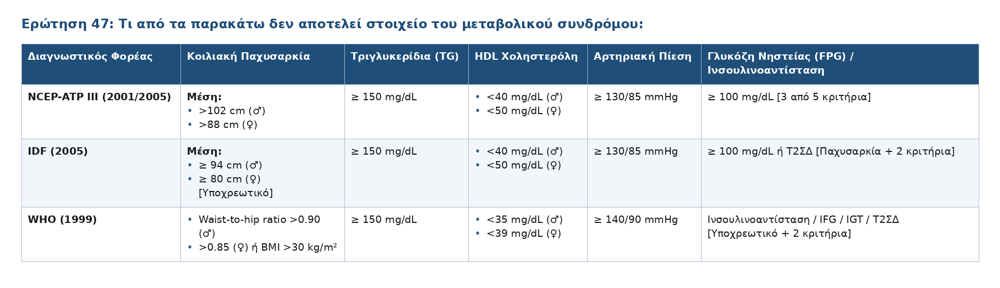
M2_Q47_TAB_01.png
📊 ΔΙΑΓΡΑΜΜΑ (M2_Q47_DIAG_01.png)

M2_Q47_DIAG_01.png
📊 ΔΙΑΓΡΑΜΜΑ (M2_Q47_DIAG_02.png)
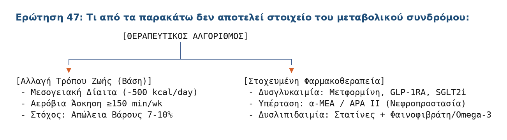
M2_Q47_DIAG_02.png
📋 ΠΙΝΑΚΑΣ / ΣΧΗΜΑ (M2_Q47_TAB_02.png)

M2_Q47_TAB_02.png
📋 ΠΙΝΑΚΑΣ / ΣΧΗΜΑ (M2_Q47_TAB_03.png)
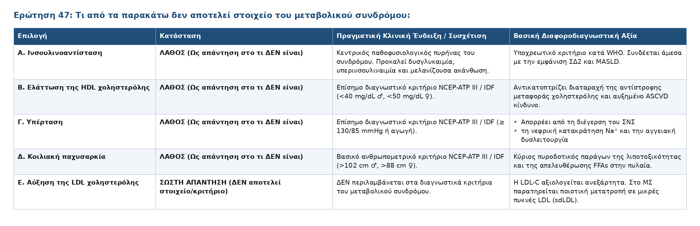
M2_Q47_TAB_03.png
Θέμα 48 (Seq 2)
Σύνολο πινάκων & εικόνων: 5
Το φαιοχρωμοκύττωμα είναι νεόπλασμα προερχόμενο συχνότερα από:
📷 ΕΙΚΟΝΑ ⚠️ (Δεν βρέθηκε) (M2_Q48_NB.png)

M2_Q48_NB.png
📋 ΠΙΝΑΚΑΣ / ΣΧΗΜΑ (M2_Q48_TAB_01.png)
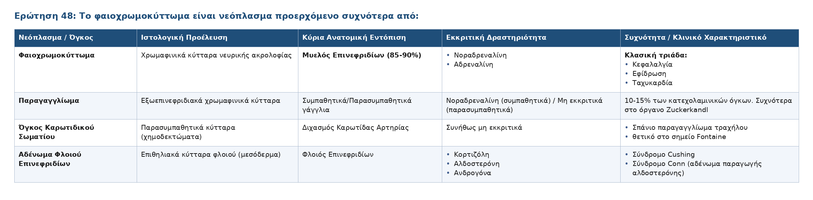
M2_Q48_TAB_01.png
📋 ΠΙΝΑΚΑΣ / ΣΧΗΜΑ (M2_Q48_TAB_02.png)
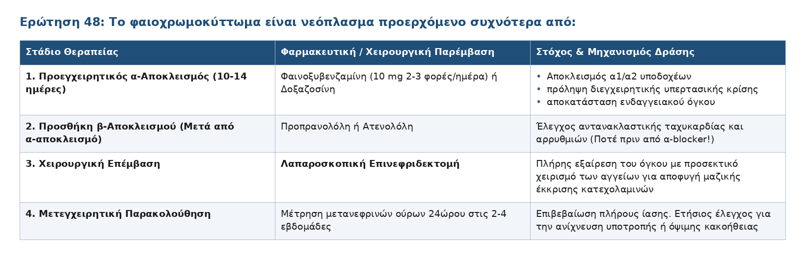
M2_Q48_TAB_02.png
📋 ΠΙΝΑΚΑΣ / ΣΧΗΜΑ (M2_Q48_TAB_03.png)
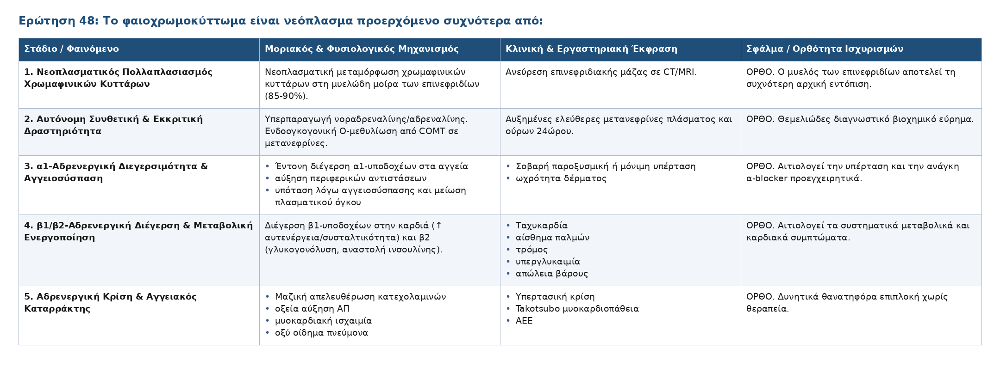
M2_Q48_TAB_03.png
📋 ΠΙΝΑΚΑΣ / ΣΧΗΜΑ (M2_Q48_TAB_04.png)
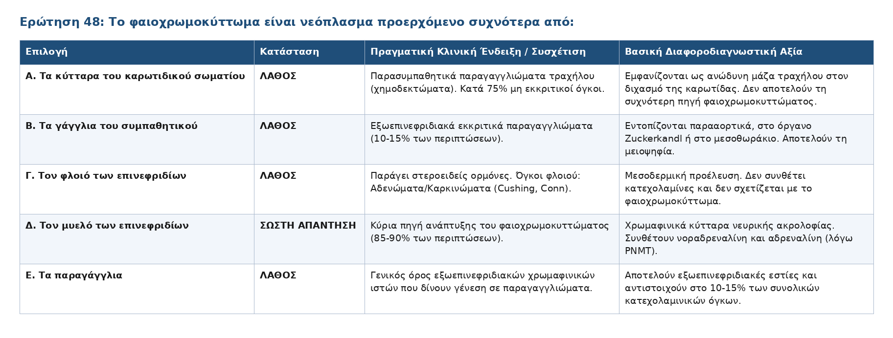
M2_Q48_TAB_04.png
Θέμα 49 (Seq 3)
Σύνολο πινάκων & εικόνων: 7
Η συχνότερη αιτία πρωτοπαθούς φλοιοεπινεφριδιακής ανεπάρκειας είναι:
📷 ΕΙΚΟΝΑ ⚠️ (Δεν βρέθηκε) (M2_Q49_NB.png)

M2_Q49_NB.png
📋 ΠΙΝΑΚΑΣ / ΣΧΗΜΑ (M2_Q49_TAB_01.png)
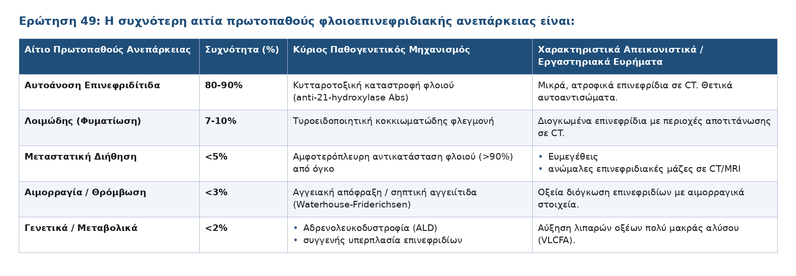
M2_Q49_TAB_01.png
📊 ΔΙΑΓΡΑΜΜΑ (M2_Q49_DIAG_01.png)
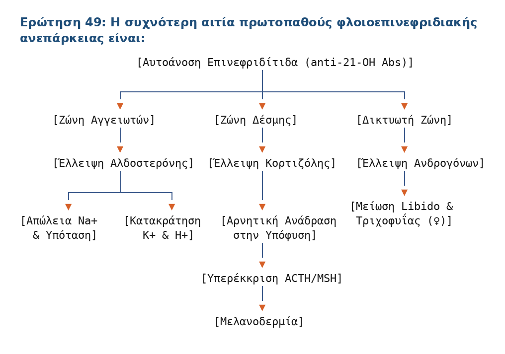
M2_Q49_DIAG_01.png
📊 ΔΙΑΓΡΑΜΜΑ (M2_Q49_DIAG_02.png)
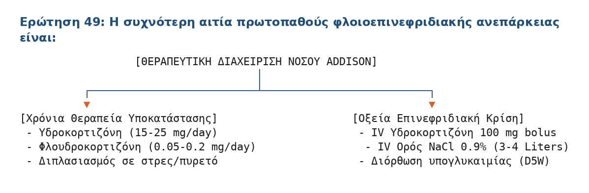
M2_Q49_DIAG_02.png
📋 ΠΙΝΑΚΑΣ / ΣΧΗΜΑ (M2_Q49_TAB_02.png)
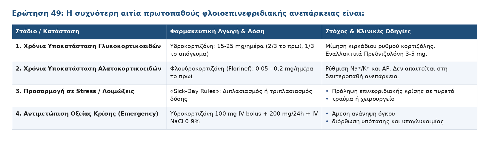
M2_Q49_TAB_02.png
📋 ΠΙΝΑΚΑΣ / ΣΧΗΜΑ (M2_Q49_TAB_03.png)

M2_Q49_TAB_03.png
📋 ΠΙΝΑΚΑΣ / ΣΧΗΜΑ (M2_Q49_TAB_04.png)
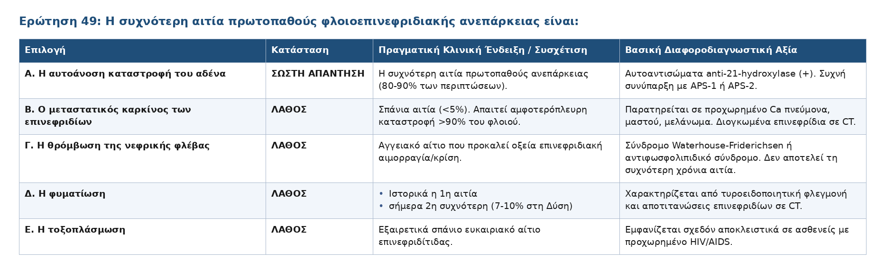
M2_Q49_TAB_04.png
Θέμα 50 (Seq 4)
Σύνολο πινάκων & εικόνων: 6
Η πλέον ευαίσθητη εργαστηριακή μέτρηση για τη διάγνωση του φαιοχρωμοκυττώματος είναι:
📷 ΕΙΚΟΝΑ ⚠️ (Δεν βρέθηκε) (M2_Q50_NB.png)

M2_Q50_NB.png
📋 ΠΙΝΑΚΑΣ / ΣΧΗΜΑ (M2_Q50_TAB_01.png)

M2_Q50_TAB_01.png
📊 ΔΙΑΓΡΑΜΜΑ (M2_Q50_DIAG_01.png)
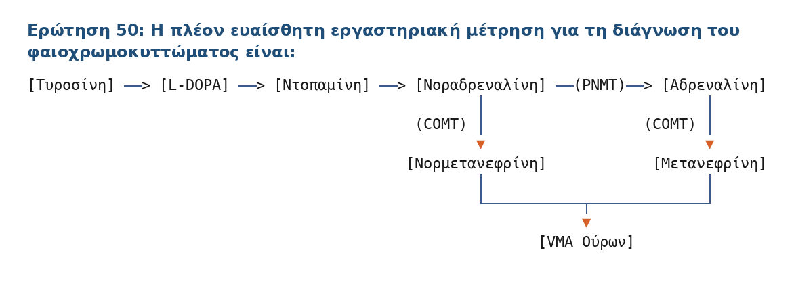
M2_Q50_DIAG_01.png
📊 ΔΙΑΓΡΑΜΜΑ (M2_Q50_DIAG_02.png)
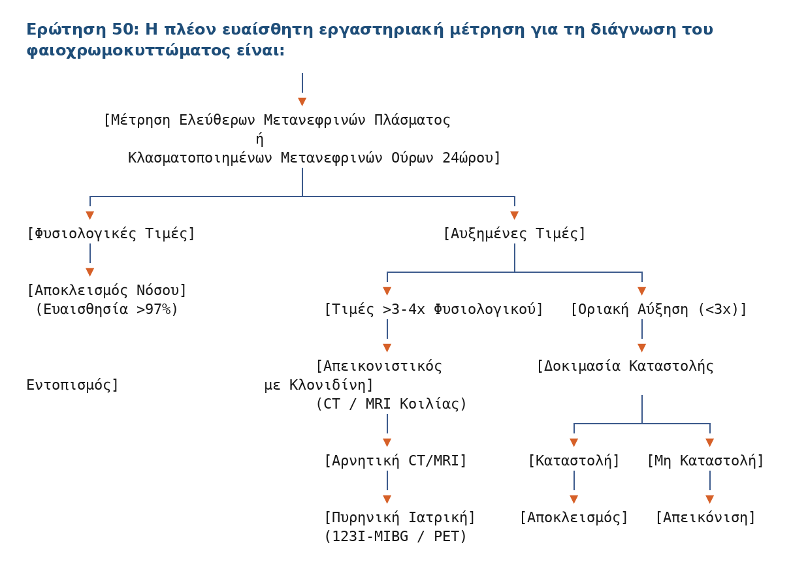
M2_Q50_DIAG_02.png
📋 ΠΙΝΑΚΑΣ / ΣΧΗΜΑ (M2_Q50_TAB_02.png)
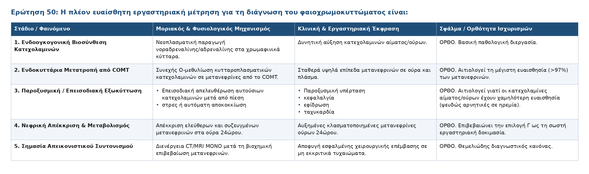
M2_Q50_TAB_02.png
📋 ΠΙΝΑΚΑΣ / ΣΧΗΜΑ (M2_Q50_TAB_03.png)

M2_Q50_TAB_03.png
Θέμα 51 (Seq 5)
Σύνολο πινάκων & εικόνων: 8
Η λήψη σημαντικής ποσότητας οινοπνεύματος προκαλεί:
📷 ΕΙΚΟΝΑ ⚠️ (Δεν βρέθηκε) (M2_Q51_NB.png)

M2_Q51_NB.png
📋 ΠΙΝΑΚΑΣ / ΣΧΗΜΑ (M2_Q51_TAB_01.png)
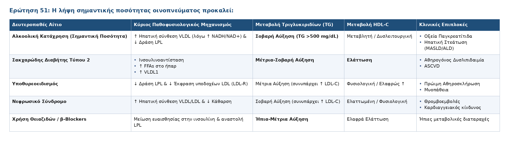
M2_Q51_TAB_01.png
📊 ΔΙΑΓΡΑΜΜΑ (M2_Q51_DIAG_01.png)
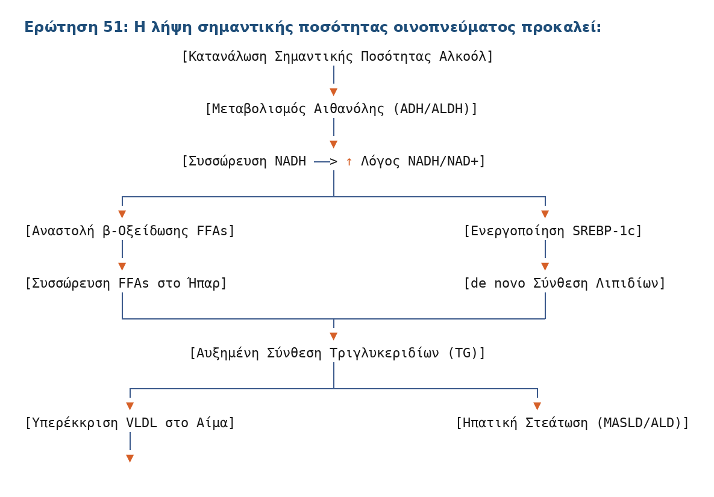
M2_Q51_DIAG_01.png
📊 ΔΙΑΓΡΑΜΜΑ (M2_Q51_DIAG_02.png)
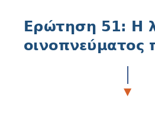
M2_Q51_DIAG_02.png
📊 ΔΙΑΓΡΑΜΜΑ (M2_Q51_DIAG_03.png)
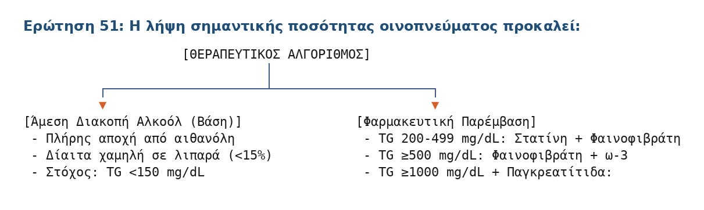
M2_Q51_DIAG_03.png
📋 ΠΙΝΑΚΑΣ / ΣΧΗΜΑ (M2_Q51_TAB_02.png)

M2_Q51_TAB_02.png
📋 ΠΙΝΑΚΑΣ / ΣΧΗΜΑ (M2_Q51_TAB_03.png)

M2_Q51_TAB_03.png
📋 ΠΙΝΑΚΑΣ / ΣΧΗΜΑ (M2_Q51_TAB_04.png)
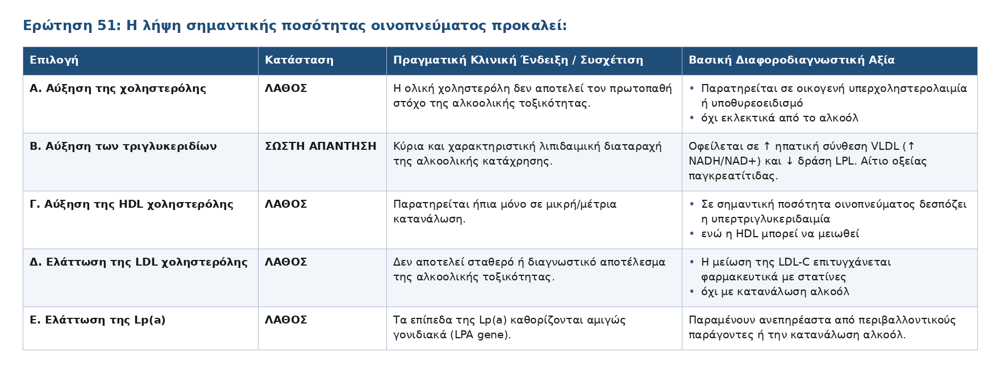
M2_Q51_TAB_04.png
Θέμα 52 (Seq 6)
Σύνολο πινάκων & εικόνων: 7
Η απολιποπρωτεΐνη Β-100:
📷 ΕΙΚΟΝΑ ⚠️ (Δεν βρέθηκε) (M2_Q52_NB.png)

M2_Q52_NB.png
📋 ΠΙΝΑΚΑΣ / ΣΧΗΜΑ (M2_Q52_TAB_01.png)
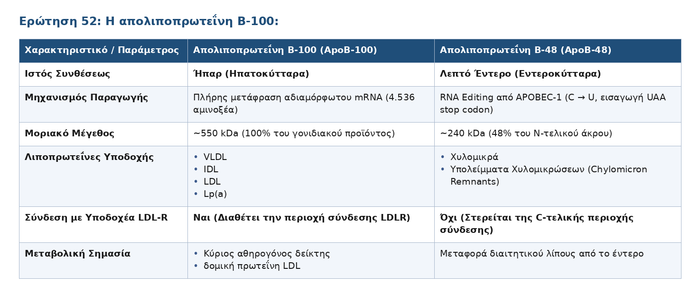
M2_Q52_TAB_01.png
📊 ΔΙΑΓΡΑΜΜΑ (M2_Q52_DIAG_01.png)
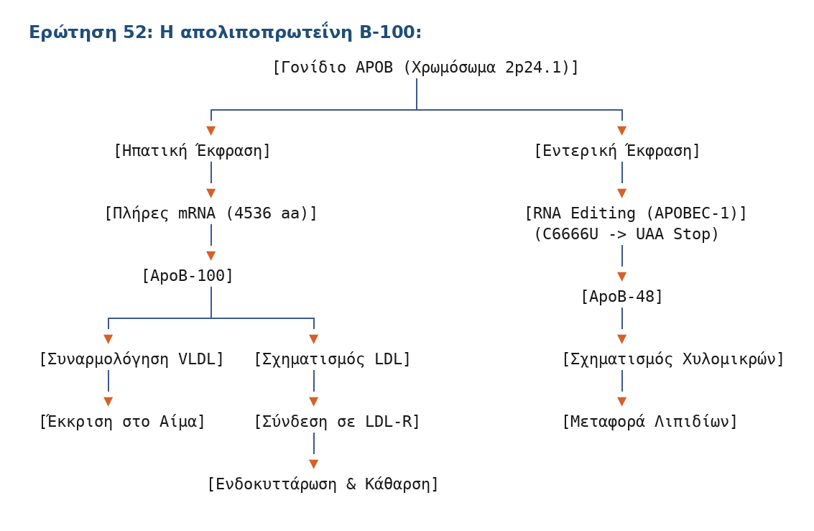
M2_Q52_DIAG_01.png
📊 ΔΙΑΓΡΑΜΜΑ (M2_Q52_DIAG_02.png)

M2_Q52_DIAG_02.png
📋 ΠΙΝΑΚΑΣ / ΣΧΗΜΑ (M2_Q52_TAB_02.png)
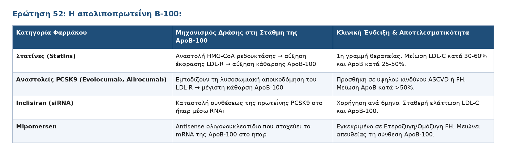
M2_Q52_TAB_02.png
📋 ΠΙΝΑΚΑΣ / ΣΧΗΜΑ (M2_Q52_TAB_03.png)
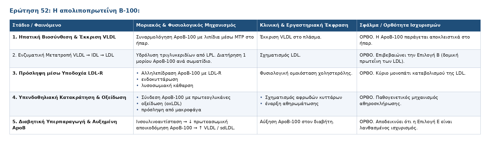
M2_Q52_TAB_03.png
📋 ΠΙΝΑΚΑΣ / ΣΧΗΜΑ (M2_Q52_TAB_04.png)
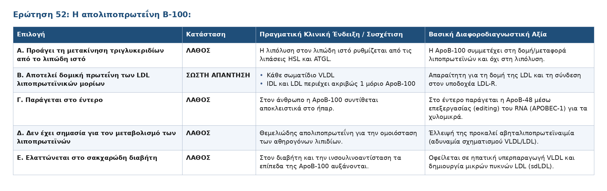
M2_Q52_TAB_04.png
Θέμα 53 (Seq 7)
Σύνολο πινάκων & εικόνων: 6
Για την θεραπευτική αντιμετώπιση της υπερχοληστερολαιμίας το φάρμακο εκλογής είναι:
📷 ΕΙΚΟΝΑ ⚠️ (Δεν βρέθηκε) (M2_Q53_NB.png)

M2_Q53_NB.png
📋 ΠΙΝΑΚΑΣ / ΣΧΗΜΑ (M2_Q53_TAB_01.png)
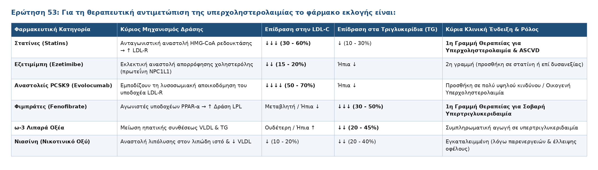
M2_Q53_TAB_01.png
📊 ΔΙΑΓΡΑΜΜΑ (M2_Q53_DIAG_01.png)
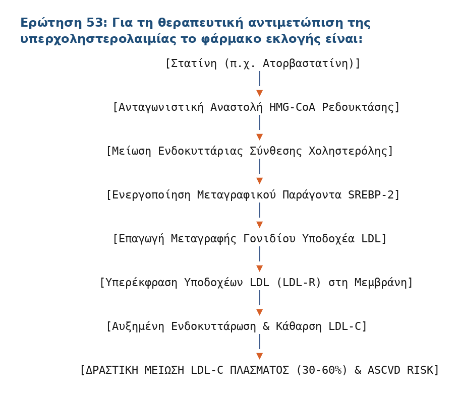
M2_Q53_DIAG_01.png
📊 ΔΙΑΓΡΑΜΜΑ (M2_Q53_DIAG_02.png)
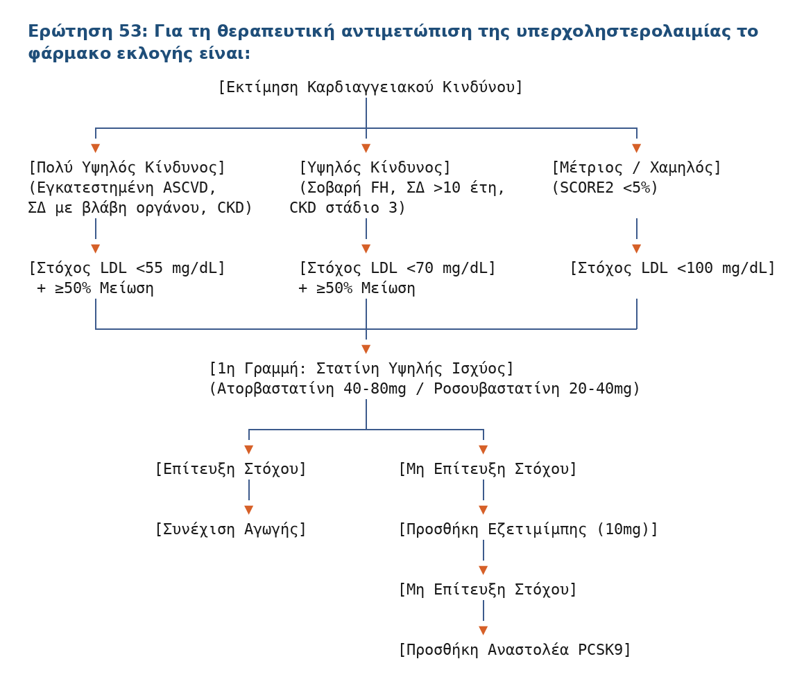
M2_Q53_DIAG_02.png
📋 ΠΙΝΑΚΑΣ / ΣΧΗΜΑ (M2_Q53_TAB_02.png)

M2_Q53_TAB_02.png
📋 ΠΙΝΑΚΑΣ / ΣΧΗΜΑ (M2_Q53_TAB_03.png)

M2_Q53_TAB_03.png
Θέμα 54 (Seq 8)
Σύνολο πινάκων & εικόνων: 7
Γυναίκα ασθενής 42 ετών παραπονείται για αίσθημα κόπωσης και αιμωδία στα δάχτυλα του δεξιού χεριού. στον έλεγχο που ακολουθεί διαπιστώνονται επίπεδα ολικού ασβεστίου αίματος 8,4 mg/dl, αλβουμίνη αίματος 3,1 γραμ/dl και κρεατινίνη αίματος 0,9mg/dl. Ποια παθολογική κατάσταση δεν μπορεί να είναι:
📷 ΕΙΚΟΝΑ ⚠️ (Δεν βρέθηκε) (M2_Q54_NB.png)

M2_Q54_NB.png
📋 ΠΙΝΑΚΑΣ / ΣΧΗΜΑ (M2_Q54_TAB_01.png)

M2_Q54_TAB_01.png
📊 ΔΙΑΓΡΑΜΜΑ (M2_Q54_DIAG_01.png)
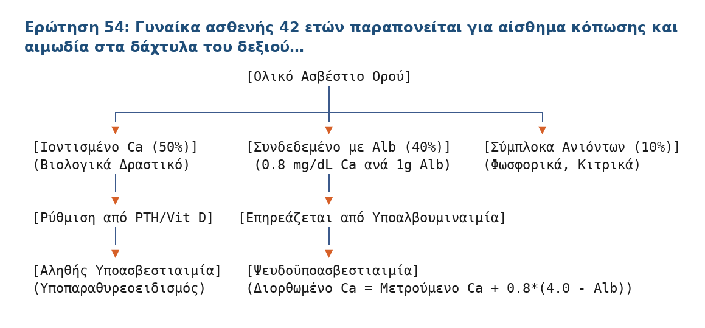
M2_Q54_DIAG_01.png
📊 ΔΙΑΓΡΑΜΜΑ (M2_Q54_DIAG_02.png)
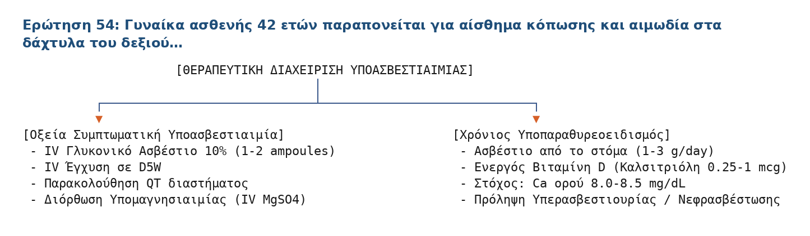
M2_Q54_DIAG_02.png
📋 ΠΙΝΑΚΑΣ / ΣΧΗΜΑ (M2_Q54_TAB_02.png)

M2_Q54_TAB_02.png
📋 ΠΙΝΑΚΑΣ / ΣΧΗΜΑ (M2_Q54_TAB_03.png)
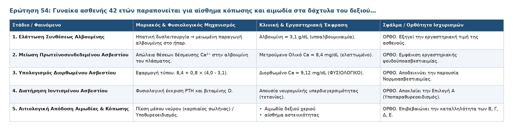
M2_Q54_TAB_03.png
📋 ΠΙΝΑΚΑΣ / ΣΧΗΜΑ (M2_Q54_TAB_04.png)
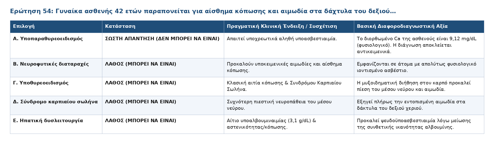
M2_Q54_TAB_04.png
Θέμα 55 (Seq 9)
Σύνολο πινάκων & εικόνων: 9
Η οστεοπόρωση χαρακτηρίζεται από:
📷 ΕΙΚΟΝΑ ⚠️ (Δεν βρέθηκε) (M2_Q55_NB.png)

M2_Q55_NB.png
📋 ΠΙΝΑΚΑΣ / ΣΧΗΜΑ (M2_Q55_TAB_01.png)

M2_Q55_TAB_01.png
📊 ΔΙΑΓΡΑΜΜΑ (M2_Q55_DIAG_01.png)
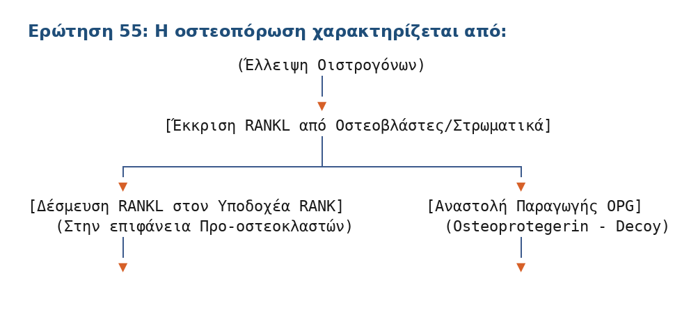
M2_Q55_DIAG_01.png
📊 ΔΙΑΓΡΑΜΜΑ (M2_Q55_DIAG_02.png)
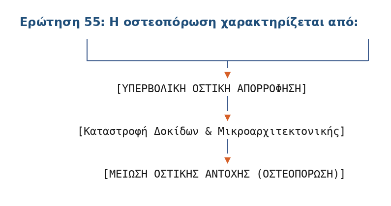
M2_Q55_DIAG_02.png
📊 ΔΙΑΓΡΑΜΜΑ (M2_Q55_DIAG_03.png)
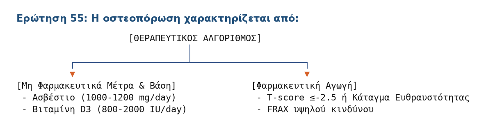
M2_Q55_DIAG_03.png
📊 ΔΙΑΓΡΑΜΜΑ (M2_Q55_DIAG_04.png)
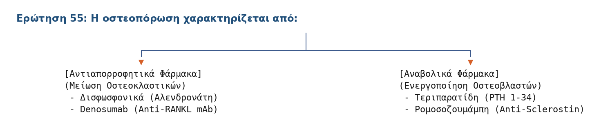
M2_Q55_DIAG_04.png
📋 ΠΙΝΑΚΑΣ / ΣΧΗΜΑ (M2_Q55_TAB_02.png)

M2_Q55_TAB_02.png
📋 ΠΙΝΑΚΑΣ / ΣΧΗΜΑ (M2_Q55_TAB_03.png)

M2_Q55_TAB_03.png
📋 ΠΙΝΑΚΑΣ / ΣΧΗΜΑ (M2_Q55_TAB_04.png)

M2_Q55_TAB_04.png
Θέμα 56 (Seq 10)
Σύνολο πινάκων & εικόνων: 8
Ο μετεγχειρητικός υποπαραθυρεοειδισμός αντιμετωπίζεται θεραπευτικά με:
📷 ΕΙΚΟΝΑ ⚠️ (Δεν βρέθηκε) (M2_Q56_NB.png)

M2_Q56_NB.png
📋 ΠΙΝΑΚΑΣ / ΣΧΗΜΑ (M2_Q56_TAB_01.png)

M2_Q56_TAB_01.png
📊 ΔΙΑΓΡΑΜΜΑ (M2_Q56_DIAG_01.png)
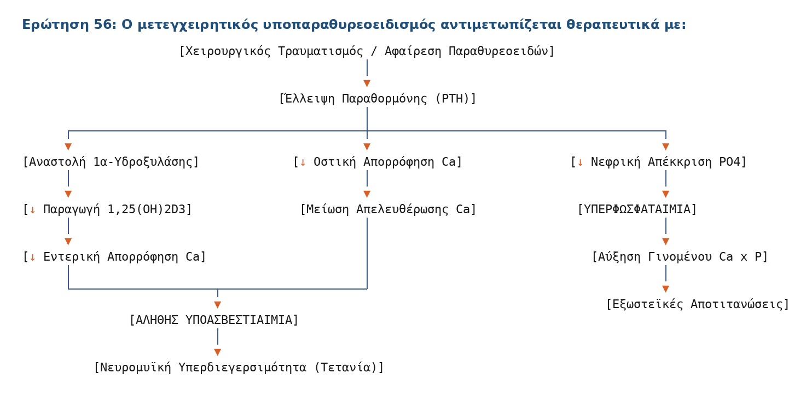
M2_Q56_DIAG_01.png
📊 ΔΙΑΓΡΑΜΜΑ (M2_Q56_DIAG_02.png)
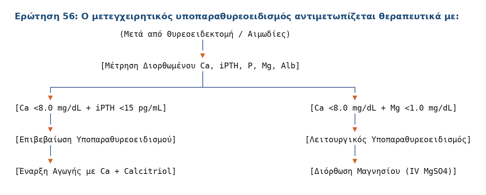
M2_Q56_DIAG_02.png
📊 ΔΙΑΓΡΑΜΜΑ (M2_Q56_DIAG_03.png)
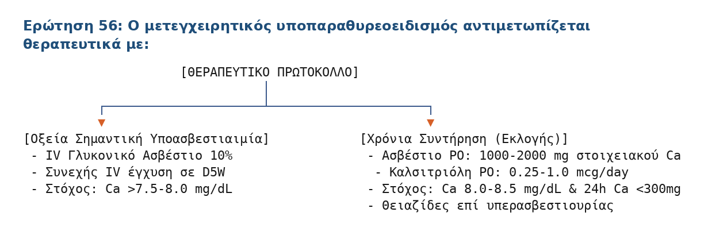
M2_Q56_DIAG_03.png
📋 ΠΙΝΑΚΑΣ / ΣΧΗΜΑ (M2_Q56_TAB_02.png)
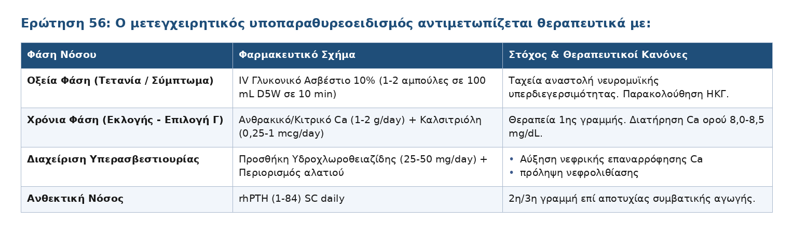
M2_Q56_TAB_02.png
📋 ΠΙΝΑΚΑΣ / ΣΧΗΜΑ (M2_Q56_TAB_03.png)

M2_Q56_TAB_03.png
📋 ΠΙΝΑΚΑΣ / ΣΧΗΜΑ (M2_Q56_TAB_04.png)

M2_Q56_TAB_04.png
Θέμα 57 (Seq 11)
Σύνολο πινάκων & εικόνων: 9
Παχύσακρο ονομάζεται το ενήλικο άτομο που έχει δείκτης μάζας σώματος:
📷 ΕΙΚΟΝΑ ⚠️ (Δεν βρέθηκε) (M2_Q57_NB.png)

M2_Q57_NB.png
📋 ΠΙΝΑΚΑΣ / ΣΧΗΜΑ (M2_Q57_TAB_01.png)

M2_Q57_TAB_01.png
📋 ΠΙΝΑΚΑΣ / ΣΧΗΜΑ (M2_Q57_TAB_02.png)
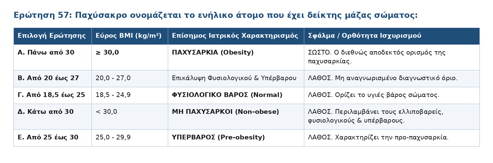
M2_Q57_TAB_02.png
📊 ΔΙΑΓΡΑΜΜΑ (M2_Q57_DIAG_01.png)
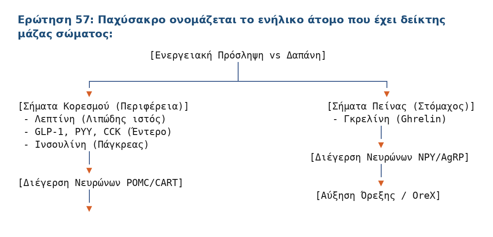
M2_Q57_DIAG_01.png
📊 ΔΙΑΓΡΑΜΜΑ (M2_Q57_DIAG_02.png)
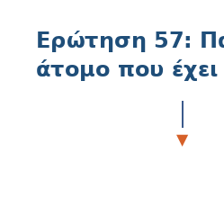
M2_Q57_DIAG_02.png
📊 ΔΙΑΓΡΑΜΜΑ (M2_Q57_DIAG_03.png)
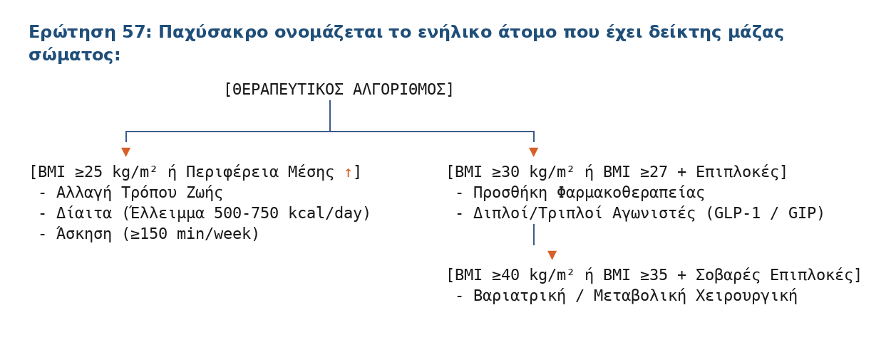
M2_Q57_DIAG_03.png
📋 ΠΙΝΑΚΑΣ / ΣΧΗΜΑ (M2_Q57_TAB_03.png)
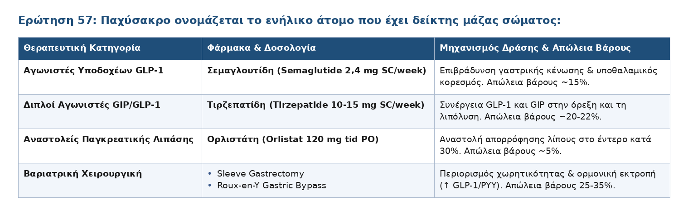
M2_Q57_TAB_03.png
📋 ΠΙΝΑΚΑΣ / ΣΧΗΜΑ (M2_Q57_TAB_04.png)
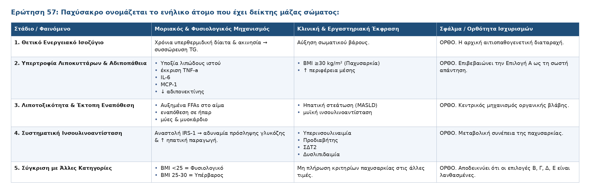
M2_Q57_TAB_04.png
📋 ΠΙΝΑΚΑΣ / ΣΧΗΜΑ (M2_Q57_TAB_05.png)
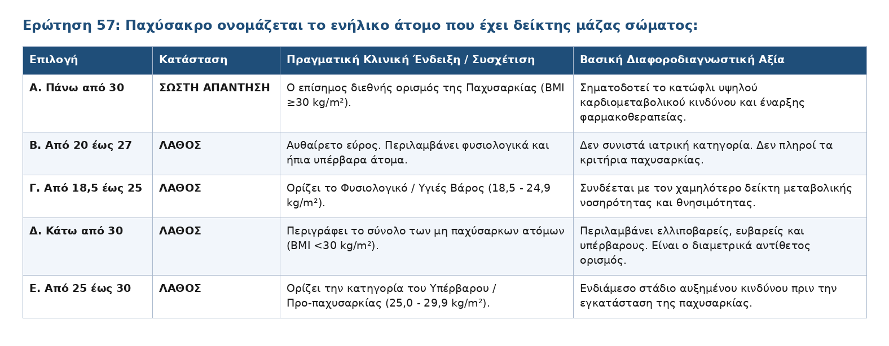
M2_Q57_TAB_05.png
Θέμα 58 (Seq 12)
Σύνολο πινάκων & εικόνων: 7
Όλα τα παρακάτω είναι συμπτώματα του συνδρόμου της αποφρακτικής άπνοιας στον ύπνο εκτός από ένα:
📷 ΕΙΚΟΝΑ ⚠️ (Δεν βρέθηκε) (M2_Q58_NB.png)

M2_Q58_NB.png
📋 ΠΙΝΑΚΑΣ / ΣΧΗΜΑ (M2_Q58_TAB_01.png)
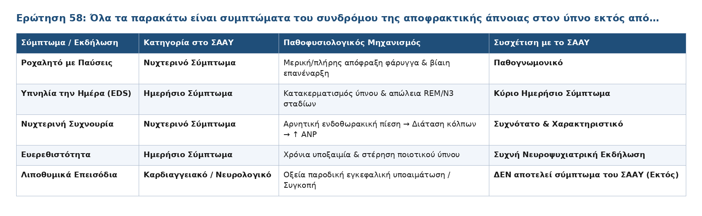
M2_Q58_TAB_01.png
📊 ΔΙΑΓΡΑΜΜΑ (M2_Q58_DIAG_01.png)
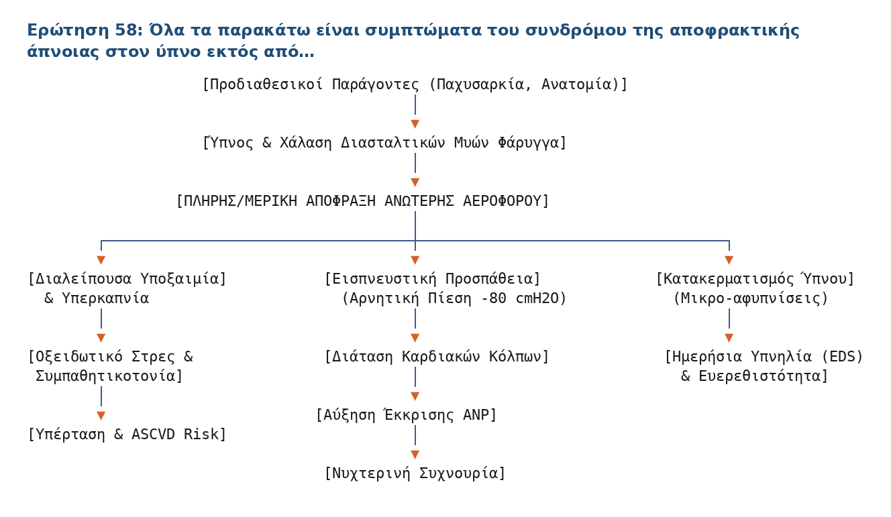
M2_Q58_DIAG_01.png
📊 ΔΙΑΓΡΑΜΜΑ (M2_Q58_DIAG_02.png)

M2_Q58_DIAG_02.png
📋 ΠΙΝΑΚΑΣ / ΣΧΗΜΑ (M2_Q58_TAB_02.png)

M2_Q58_TAB_02.png
📋 ΠΙΝΑΚΑΣ / ΣΧΗΜΑ (M2_Q58_TAB_03.png)

M2_Q58_TAB_03.png
📋 ΠΙΝΑΚΑΣ / ΣΧΗΜΑ (M2_Q58_TAB_04.png)

M2_Q58_TAB_04.png
Θέμα 59 (Seq 13)
Σύνολο πινάκων & εικόνων: 6
Ποιος είναι Ο καλύτερος δείκτης για χαρακτηρισμό μιας πλευριτικής συλλογής ως επιπλεγμένης;
📷 ΕΙΚΟΝΑ ⚠️ (Δεν βρέθηκε) (M2_Q59_NB.png)

M2_Q59_NB.png
📋 ΠΙΝΑΚΑΣ / ΣΧΗΜΑ (M2_Q59_TAB_01.png)

M2_Q59_TAB_01.png
📋 ΠΙΝΑΚΑΣ / ΣΧΗΜΑ (M2_Q59_TAB_02.png)
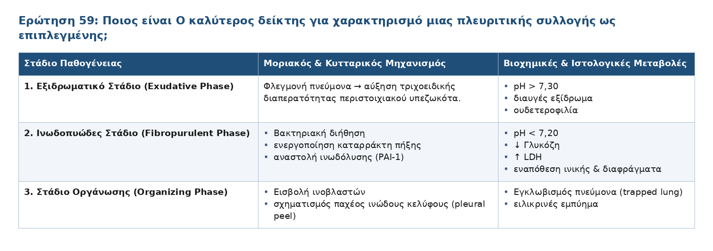
M2_Q59_TAB_02.png
📋 ΠΙΝΑΚΑΣ / ΣΧΗΜΑ (M2_Q59_TAB_03.png)
M2_Q59_TAB_03.png
📋 ΠΙΝΑΚΑΣ / ΣΧΗΜΑ (M2_Q59_TAB_04.png)

M2_Q59_TAB_04.png
📋 ΠΙΝΑΚΑΣ / ΣΧΗΜΑ (M2_Q59_TAB_05.png)
M2_Q59_TAB_05.png
Θέμα 60 (Seq 14)
Σύνολο πινάκων & εικόνων: 5
Τα διγουανίδια είναι φάρμακα τα οποία
📷 ΕΙΚΟΝΑ ⚠️ (Δεν βρέθηκε) (M2_Q60_NB.png)

M2_Q60_NB.png
📋 ΠΙΝΑΚΑΣ / ΣΧΗΜΑ (M2_Q60_TAB_01.png)

M2_Q60_TAB_01.png
📋 ΠΙΝΑΚΑΣ / ΣΧΗΜΑ (M2_Q60_TAB_02.png)
M2_Q60_TAB_02.png
📋 ΠΙΝΑΚΑΣ / ΣΧΗΜΑ (M2_Q60_TAB_03.png)
M2_Q60_TAB_03.png
📋 ΠΙΝΑΚΑΣ / ΣΧΗΜΑ (M2_Q60_TAB_04.png)

M2_Q60_TAB_04.png
Θέμα 61 (Seq 15)
Σύνολο πινάκων & εικόνων: 6
Το σύνδρομο Zollinger-ellison οφείλεται σε νεόπλασμα του γαστρεντερικού που παράγει:
📷 ΕΙΚΟΝΑ ⚠️ (Δεν βρέθηκε) (M2_Q61_NB.png)

M2_Q61_NB.png
📋 ΠΙΝΑΚΑΣ / ΣΧΗΜΑ (M2_Q61_TAB_01.png)

M2_Q61_TAB_01.png
📋 ΠΙΝΑΚΑΣ / ΣΧΗΜΑ (M2_Q61_TAB_02.png)
M2_Q61_TAB_02.png
📋 ΠΙΝΑΚΑΣ / ΣΧΗΜΑ (M2_Q61_TAB_03.png)
M2_Q61_TAB_03.png
📋 ΠΙΝΑΚΑΣ / ΣΧΗΜΑ (M2_Q61_TAB_04.png)
M2_Q61_TAB_04.png
📋 ΠΙΝΑΚΑΣ / ΣΧΗΜΑ (M2_Q61_TAB_05.png)

M2_Q61_TAB_05.png
Θέμα 62 (Seq 16)
Σύνολο πινάκων & εικόνων: 6
Ποιο από τα παρακάτω αντιφυματικά φάρμακα προκαλεί υπερουριχαιμία;
📷 ΕΙΚΟΝΑ ⚠️ (Δεν βρέθηκε) (M2_Q62_NB.png)

M2_Q62_NB.png
📋 ΠΙΝΑΚΑΣ / ΣΧΗΜΑ (M2_Q62_TAB_01.png)
M2_Q62_TAB_01.png
📊 ΔΙΑΓΡΑΜΜΑ (M2_Q62_DIAG_01.png)
M2_Q62_DIAG_01.png
📋 ΠΙΝΑΚΑΣ / ΣΧΗΜΑ (M2_Q62_TAB_02.png)

M2_Q62_TAB_02.png
📋 ΠΙΝΑΚΑΣ / ΣΧΗΜΑ (M2_Q62_TAB_03.png)

M2_Q62_TAB_03.png
📋 ΠΙΝΑΚΑΣ / ΣΧΗΜΑ (M2_Q62_TAB_04.png)

M2_Q62_TAB_04.png
Θέμα 63 (Seq 17)
Σύνολο πινάκων & εικόνων: 6
Ποιο από τα παρακάτω αντιφυματικά φάρμακα έχει νευροτοξική δράση;
📷 ΕΙΚΟΝΑ ⚠️ (Δεν βρέθηκε) (M2_Q63_NB.png)

M2_Q63_NB.png
📋 ΠΙΝΑΚΑΣ / ΣΧΗΜΑ (M2_Q63_TAB_01.png)
M2_Q63_TAB_01.png
📋 ΠΙΝΑΚΑΣ / ΣΧΗΜΑ (M2_Q63_TAB_02.png)
M2_Q63_TAB_02.png
📋 ΠΙΝΑΚΑΣ / ΣΧΗΜΑ (M2_Q63_TAB_03.png)
M2_Q63_TAB_03.png
📋 ΠΙΝΑΚΑΣ / ΣΧΗΜΑ (M2_Q63_TAB_04.png)

M2_Q63_TAB_04.png
📋 ΠΙΝΑΚΑΣ / ΣΧΗΜΑ (M2_Q63_TAB_05.png)
M2_Q63_TAB_05.png
Θέμα 64 (Seq 18)
Σύνολο πινάκων & εικόνων: 6
Όλα τα παρακάτω αποτελούν αιτία αύξησης του σωματικού βάρους εκτός από ένα
📷 ΕΙΚΟΝΑ ⚠️ (Δεν βρέθηκε) (M2_Q64_NB.png)

M2_Q64_NB.png
📋 ΠΙΝΑΚΑΣ / ΣΧΗΜΑ (M2_Q64_TAB_01.png)

M2_Q64_TAB_01.png
📊 ΔΙΑΓΡΑΜΜΑ (M2_Q64_DIAG_01.png)
M2_Q64_DIAG_01.png
📋 ΠΙΝΑΚΑΣ / ΣΧΗΜΑ (M2_Q64_TAB_02.png)

M2_Q64_TAB_02.png
📋 ΠΙΝΑΚΑΣ / ΣΧΗΜΑ (M2_Q64_TAB_03.png)

M2_Q64_TAB_03.png
📋 ΠΙΝΑΚΑΣ / ΣΧΗΜΑ (M2_Q64_TAB_04.png)

M2_Q64_TAB_04.png
Θέμα 65 (Seq 19)
Σύνολο πινάκων & εικόνων: 6
Ασθενής με ΧΑΠ εμφανίζει εμπύρετο από 48ώρου με πυώδη απόχρεμψη και στο τμήμα επειγόντων περιστατικών εμφανίζει έντονη δύσπνοια, μουσικούς ρόγχους άμφω με παράταση εκπνοής, 120 σφύξεις/λεπτό, 35 αναπνοές/λεπτό, θερμοκρασία 38,4°C, PaO2 = 52 mmHg, PaCO2 = 67 mmHg, pH = 7,32. Ποια είναι η πρώτη θεραπευτική ενέργεια που πρέπει να γίνει;
📷 ΕΙΚΟΝΑ ⚠️ (Δεν βρέθηκε) (M2_Q65_NB.png)

M2_Q65_NB.png
📋 ΠΙΝΑΚΑΣ / ΣΧΗΜΑ (M2_Q65_TAB_01.png)
M2_Q65_TAB_01.png
📊 ΔΙΑΓΡΑΜΜΑ (M2_Q65_DIAG_01.png)
M2_Q65_DIAG_01.png
📋 ΠΙΝΑΚΑΣ / ΣΧΗΜΑ (M2_Q65_TAB_02.png)
M2_Q65_TAB_02.png
📋 ΠΙΝΑΚΑΣ / ΣΧΗΜΑ (M2_Q65_TAB_03.png)

M2_Q65_TAB_03.png
📋 ΠΙΝΑΚΑΣ / ΣΧΗΜΑ (M2_Q65_TAB_04.png)
M2_Q65_TAB_04.png
Θέμα 67 (Seq 20)
Σύνολο πινάκων & εικόνων: 6
Ποιο από τα παρακάτω καρκινώματα είναι Ο πιο συχνός καρκίνος του πνεύμονα;
📷 ΕΙΚΟΝΑ ⚠️ (Δεν βρέθηκε) (M2_Q67_NB.png)

M2_Q67_NB.png
📋 ΠΙΝΑΚΑΣ / ΣΧΗΜΑ (M2_Q67_TAB_01.png)
M2_Q67_TAB_01.png
📊 ΔΙΑΓΡΑΜΜΑ (M2_Q67_DIAG_01.png)
M2_Q67_DIAG_01.png
📋 ΠΙΝΑΚΑΣ / ΣΧΗΜΑ (M2_Q67_TAB_02.png)

M2_Q67_TAB_02.png
📋 ΠΙΝΑΚΑΣ / ΣΧΗΜΑ (M2_Q67_TAB_03.png)

M2_Q67_TAB_03.png
📋 ΠΙΝΑΚΑΣ / ΣΧΗΜΑ (M2_Q67_TAB_04.png)
M2_Q67_TAB_04.png
Θέμα 66 (Seq 21)
Σύνολο πινάκων & εικόνων: 7
Η μέση εγκεφαλική αρτηρία αρδεύει
📷 ΕΙΚΟΝΑ ⚠️ (Δεν βρέθηκε) (M2_Q66_NB.png)

M2_Q66_NB.png
📋 ΠΙΝΑΚΑΣ / ΣΧΗΜΑ (M2_Q66_TAB_01.png)
M2_Q66_TAB_01.png
📋 ΠΙΝΑΚΑΣ / ΣΧΗΜΑ (M2_Q66_TAB_02.png)

M2_Q66_TAB_02.png
📋 ΠΙΝΑΚΑΣ / ΣΧΗΜΑ (M2_Q66_TAB_03.png)
M2_Q66_TAB_03.png
📋 ΠΙΝΑΚΑΣ / ΣΧΗΜΑ (M2_Q66_TAB_04.png)

M2_Q66_TAB_04.png
📋 ΠΙΝΑΚΑΣ / ΣΧΗΜΑ (M2_Q66_TAB_05.png)
M2_Q66_TAB_05.png
📋 ΠΙΝΑΚΑΣ / ΣΧΗΜΑ (M2_Q66_TAB_06.png)
M2_Q66_TAB_06.png
Θέμα 68 (Seq 22)
Σύνολο πινάκων & εικόνων: 6
Ποιο από τα παρακάτω ισχύει για τις σουλφονυλουρίες;
📷 ΕΙΚΟΝΑ ⚠️ (Δεν βρέθηκε) (M2_Q68_NB.png)

M2_Q68_NB.png
📋 ΠΙΝΑΚΑΣ / ΣΧΗΜΑ (M2_Q68_TAB_01.png)

M2_Q68_TAB_01.png
📋 ΠΙΝΑΚΑΣ / ΣΧΗΜΑ (M2_Q68_TAB_02.png)
M2_Q68_TAB_02.png
📋 ΠΙΝΑΚΑΣ / ΣΧΗΜΑ (M2_Q68_TAB_03.png)
M2_Q68_TAB_03.png
📋 ΠΙΝΑΚΑΣ / ΣΧΗΜΑ (M2_Q68_TAB_04.png)

M2_Q68_TAB_04.png
📋 ΠΙΝΑΚΑΣ / ΣΧΗΜΑ (M2_Q68_TAB_05.png)

M2_Q68_TAB_05.png
Θέμα 70 (Seq 23)
Σύνολο πινάκων & εικόνων: 5
Τι δεν ισχύει για την γιγαντοκυτταρική αρτηρίτιδα
📷 ΕΙΚΟΝΑ ⚠️ (Δεν βρέθηκε) (M2_Q70_NB.png)

M2_Q70_NB.png
📋 ΠΙΝΑΚΑΣ / ΣΧΗΜΑ (M2_Q70_TAB_01.png)
M2_Q70_TAB_01.png
📋 ΠΙΝΑΚΑΣ / ΣΧΗΜΑ (M2_Q70_TAB_02.png)
M2_Q70_TAB_02.png
📋 ΠΙΝΑΚΑΣ / ΣΧΗΜΑ (M2_Q70_TAB_03.png)
M2_Q70_TAB_03.png
📋 ΠΙΝΑΚΑΣ / ΣΧΗΜΑ (M2_Q70_TAB_04.png)

M2_Q70_TAB_04.png
Θέμα 71 (Seq 24)
Σύνολο πινάκων & εικόνων: 6
Τα παρακάτω παρατηρούνται στον συστηματικό ερυθηματώδη λύκο εκτός από ένα
📷 ΕΙΚΟΝΑ ⚠️ (Δεν βρέθηκε) (M2_Q71_NB.png)

M2_Q71_NB.png
📋 ΠΙΝΑΚΑΣ / ΣΧΗΜΑ (M2_Q71_TAB_01.png)
M2_Q71_TAB_01.png
📋 ΠΙΝΑΚΑΣ / ΣΧΗΜΑ (M2_Q71_TAB_02.png)

M2_Q71_TAB_02.png
📋 ΠΙΝΑΚΑΣ / ΣΧΗΜΑ (M2_Q71_TAB_03.png)

M2_Q71_TAB_03.png
📋 ΠΙΝΑΚΑΣ / ΣΧΗΜΑ (M2_Q71_TAB_04.png)

M2_Q71_TAB_04.png
📋 ΠΙΝΑΚΑΣ / ΣΧΗΜΑ (M2_Q71_TAB_05.png)
M2_Q71_TAB_05.png
Θέμα 72 (Seq 25)
Σύνολο πινάκων & εικόνων: 6
Ποιο από τα παρακάτω ισχύει για το ρευματοειδή παράγοντα
📷 ΕΙΚΟΝΑ ⚠️ (Δεν βρέθηκε) (M2_Q72_NB.png)

M2_Q72_NB.png
📋 ΠΙΝΑΚΑΣ / ΣΧΗΜΑ (M2_Q72_TAB_01.png)
M2_Q72_TAB_01.png
📋 ΠΙΝΑΚΑΣ / ΣΧΗΜΑ (M2_Q72_TAB_02.png)
M2_Q72_TAB_02.png
📋 ΠΙΝΑΚΑΣ / ΣΧΗΜΑ (M2_Q72_TAB_03.png)

M2_Q72_TAB_03.png
📋 ΠΙΝΑΚΑΣ / ΣΧΗΜΑ (M2_Q72_TAB_04.png)

M2_Q72_TAB_04.png
📋 ΠΙΝΑΚΑΣ / ΣΧΗΜΑ (M2_Q72_TAB_05.png)
M2_Q72_TAB_05.png
Θέμα 73 (Seq 26)
Σύνολο πινάκων & εικόνων: 6
Ποιο από τα παρακάτω ισχύει για την ουρική αρθρίτιδα
📷 ΕΙΚΟΝΑ ⚠️ (Δεν βρέθηκε) (M2_Q73_NB.png)

M2_Q73_NB.png
📋 ΠΙΝΑΚΑΣ / ΣΧΗΜΑ (M2_Q73_TAB_01.png)
M2_Q73_TAB_01.png
📊 ΔΙΑΓΡΑΜΜΑ (M2_Q73_DIAG_01.png)
M2_Q73_DIAG_01.png
📋 ΠΙΝΑΚΑΣ / ΣΧΗΜΑ (M2_Q73_TAB_02.png)
M2_Q73_TAB_02.png
📋 ΠΙΝΑΚΑΣ / ΣΧΗΜΑ (M2_Q73_TAB_03.png)

M2_Q73_TAB_03.png
📋 ΠΙΝΑΚΑΣ / ΣΧΗΜΑ (M2_Q73_TAB_04.png)
M2_Q73_TAB_04.png
Θέμα 74 (Seq 27)
Σύνολο πινάκων & εικόνων: 5
Ποιο από τα παρακάτω είναι χαρακτηριστικό του φυσιολογικού συνοβιακού υγρού
📷 ΕΙΚΟΝΑ ⚠️ (Δεν βρέθηκε) (M2_Q74_NB.png)

M2_Q74_NB.png
📋 ΠΙΝΑΚΑΣ / ΣΧΗΜΑ (M2_Q74_TAB_01.png)
M2_Q74_TAB_01.png
📋 ΠΙΝΑΚΑΣ / ΣΧΗΜΑ (M2_Q74_TAB_02.png)
M2_Q74_TAB_02.png
📋 ΠΙΝΑΚΑΣ / ΣΧΗΜΑ (M2_Q74_TAB_03.png)

M2_Q74_TAB_03.png
📋 ΠΙΝΑΚΑΣ / ΣΧΗΜΑ (M2_Q74_TAB_04.png)
M2_Q74_TAB_04.png
Θέμα 75 (Seq 28)
Σύνολο πινάκων & εικόνων: 6
Ποιο από τα παρακάτω χαρακτηριστικά της ρευματοειδούς αρθρίτιδας δεν σημαίνει και βαρύτερη πρόγνωση
📷 ΕΙΚΟΝΑ ⚠️ (Δεν βρέθηκε) (M2_Q75_NB.png)

M2_Q75_NB.png
📋 ΠΙΝΑΚΑΣ / ΣΧΗΜΑ (M2_Q75_TAB_01.png)

M2_Q75_TAB_01.png
📊 ΔΙΑΓΡΑΜΜΑ (M2_Q75_DIAG_01.png)
M2_Q75_DIAG_01.png
📋 ΠΙΝΑΚΑΣ / ΣΧΗΜΑ (M2_Q75_TAB_02.png)
M2_Q75_TAB_02.png
📋 ΠΙΝΑΚΑΣ / ΣΧΗΜΑ (M2_Q75_TAB_03.png)

M2_Q75_TAB_03.png
📋 ΠΙΝΑΚΑΣ / ΣΧΗΜΑ (M2_Q75_TAB_04.png)
M2_Q75_TAB_04.png
Θέμα 76 (Seq 29)
Σύνολο πινάκων & εικόνων: 6
Τι ισχύει σχετικά με την σηπτική αρθρίτιδα
📷 ΕΙΚΟΝΑ ⚠️ (Δεν βρέθηκε) (M2_Q76_NB.png)

M2_Q76_NB.png
📋 ΠΙΝΑΚΑΣ / ΣΧΗΜΑ (M2_Q76_TAB_01.png)
M2_Q76_TAB_01.png
📊 ΔΙΑΓΡΑΜΜΑ (M2_Q76_DIAG_01.png)

M2_Q76_DIAG_01.png
📋 ΠΙΝΑΚΑΣ / ΣΧΗΜΑ (M2_Q76_TAB_02.png)
M2_Q76_TAB_02.png
📋 ΠΙΝΑΚΑΣ / ΣΧΗΜΑ (M2_Q76_TAB_03.png)

M2_Q76_TAB_03.png
📋 ΠΙΝΑΚΑΣ / ΣΧΗΜΑ (M2_Q76_TAB_04.png)

M2_Q76_TAB_04.png
Θέμα 77 (Seq 30)
Σύνολο πινάκων & εικόνων: 12
Τι ισχύει σχετικά με τα φαγοκύτταρα
📷 ΕΙΚΟΝΑ ⚠️ (Δεν βρέθηκε) (M2_Q77_NB.png)

M2_Q77_NB.png
📊 ΔΙΑΓΡΑΜΜΑ (M2_Q77_DIAG_01.png)
M2_Q77_DIAG_01.png
📊 ΔΙΑΓΡΑΜΜΑ (M2_Q77_DIAG_02.png)
M2_Q77_DIAG_02.png
📋 ΠΙΝΑΚΑΣ / ΣΧΗΜΑ (M2_Q77_TAB_01.png)
M2_Q77_TAB_01.png
📊 ΔΙΑΓΡΑΜΜΑ (M2_Q77_DIAG_03.png)
M2_Q77_DIAG_03.png
📊 ΔΙΑΓΡΑΜΜΑ (M2_Q77_DIAG_04.png)

M2_Q77_DIAG_04.png
📊 ΔΙΑΓΡΑΜΜΑ (M2_Q77_DIAG_05.png)

M2_Q77_DIAG_05.png
📊 ΔΙΑΓΡΑΜΜΑ (M2_Q77_DIAG_06.png)
M2_Q77_DIAG_06.png
📊 ΔΙΑΓΡΑΜΜΑ (M2_Q77_DIAG_07.png)

M2_Q77_DIAG_07.png
📋 ΠΙΝΑΚΑΣ / ΣΧΗΜΑ (M2_Q77_TAB_02.png)
M2_Q77_TAB_02.png
📋 ΠΙΝΑΚΑΣ / ΣΧΗΜΑ (M2_Q77_TAB_03.png)

M2_Q77_TAB_03.png
📋 ΠΙΝΑΚΑΣ / ΣΧΗΜΑ (M2_Q77_TAB_04.png)
M2_Q77_TAB_04.png
Θέμα 78 (Seq 31)
Σύνολο πινάκων & εικόνων: 7
Όσον αφορά στην προδιάθεση για λοιμώξεις, ποιος συσχετισμός από τους παρακάτω ισχύει
📷 ΕΙΚΟΝΑ ⚠️ (Δεν βρέθηκε) (M2_Q78_NB.png)

M2_Q78_NB.png
📋 ΠΙΝΑΚΑΣ / ΣΧΗΜΑ (M2_Q78_TAB_01.png)
M2_Q78_TAB_01.png
📊 ΔΙΑΓΡΑΜΜΑ (M2_Q78_DIAG_01.png)

M2_Q78_DIAG_01.png
📊 ΔΙΑΓΡΑΜΜΑ (M2_Q78_DIAG_02.png)
M2_Q78_DIAG_02.png
📋 ΠΙΝΑΚΑΣ / ΣΧΗΜΑ (M2_Q78_TAB_02.png)
M2_Q78_TAB_02.png
📋 ΠΙΝΑΚΑΣ / ΣΧΗΜΑ (M2_Q78_TAB_03.png)
M2_Q78_TAB_03.png
📋 ΠΙΝΑΚΑΣ / ΣΧΗΜΑ (M2_Q78_TAB_04.png)
M2_Q78_TAB_04.png
Θέμα 79 (Seq 32)
Σύνολο πινάκων & εικόνων: 6
Στις δερματικές εκδηλώσεις της λοίμωξης από HIV περιλαμβάνονται όλα τα παρακάτω εκτός από ένα
📷 ΕΙΚΟΝΑ ⚠️ (Δεν βρέθηκε) (M2_Q79_NB.png)

M2_Q79_NB.png
📋 ΠΙΝΑΚΑΣ / ΣΧΗΜΑ (M2_Q79_TAB_01.png)

M2_Q79_TAB_01.png
📊 ΔΙΑΓΡΑΜΜΑ (M2_Q79_DIAG_01.png)

M2_Q79_DIAG_01.png
📋 ΠΙΝΑΚΑΣ / ΣΧΗΜΑ (M2_Q79_TAB_02.png)

M2_Q79_TAB_02.png
📋 ΠΙΝΑΚΑΣ / ΣΧΗΜΑ (M2_Q79_TAB_03.png)

M2_Q79_TAB_03.png
📋 ΠΙΝΑΚΑΣ / ΣΧΗΜΑ (M2_Q79_TAB_04.png)

M2_Q79_TAB_04.png
Θέμα 80 (Seq 33)
Σύνολο πινάκων & εικόνων: 6
Ποιο από τα παρακάτω ισχύει σχετικά με την λοίμωξη από HIV και το AIDS
📷 ΕΙΚΟΝΑ ⚠️ (Δεν βρέθηκε) (M2_Q80_NB.png)

M2_Q80_NB.png
📋 ΠΙΝΑΚΑΣ / ΣΧΗΜΑ (M2_Q80_TAB_01.png)
M2_Q80_TAB_01.png
📊 ΔΙΑΓΡΑΜΜΑ (M2_Q80_DIAG_01.png)

M2_Q80_DIAG_01.png
📋 ΠΙΝΑΚΑΣ / ΣΧΗΜΑ (M2_Q80_TAB_02.png)

M2_Q80_TAB_02.png
📋 ΠΙΝΑΚΑΣ / ΣΧΗΜΑ (M2_Q80_TAB_03.png)
M2_Q80_TAB_03.png
📋 ΠΙΝΑΚΑΣ / ΣΧΗΜΑ (M2_Q80_TAB_04.png)
M2_Q80_TAB_04.png
Θέμα 81 (Seq 34)
Σύνολο πινάκων & εικόνων: 7
Ποια κλινική εικόνα, σε συνδυασμό με τα επιδημιολογικά χαρακτηριστικά, θέτει την υποψία λοίμωξης από HIV
📷 ΕΙΚΟΝΑ ⚠️ (Δεν βρέθηκε) (M2_Q81_NB.png)

M2_Q81_NB.png
📋 ΠΙΝΑΚΑΣ / ΣΧΗΜΑ (M2_Q81_TAB_01.png)

M2_Q81_TAB_01.png
📊 ΔΙΑΓΡΑΜΜΑ (M2_Q81_DIAG_01.png)
M2_Q81_DIAG_01.png
📊 ΔΙΑΓΡΑΜΜΑ (M2_Q81_DIAG_02.png)
M2_Q81_DIAG_02.png
📋 ΠΙΝΑΚΑΣ / ΣΧΗΜΑ (M2_Q81_TAB_02.png)

M2_Q81_TAB_02.png
📋 ΠΙΝΑΚΑΣ / ΣΧΗΜΑ (M2_Q81_TAB_03.png)
M2_Q81_TAB_03.png
📋 ΠΙΝΑΚΑΣ / ΣΧΗΜΑ (M2_Q81_TAB_04.png)
M2_Q81_TAB_04.png
Θέμα 82 (Seq 35)
Σύνολο πινάκων & εικόνων: 5
Σε ποιο από τα παρακάτω η πενικιλίνη αποτελεί σωστή θεραπευτική επιλογή
📷 ΕΙΚΟΝΑ ⚠️ (Δεν βρέθηκε) (M2_Q82_NB.png)

M2_Q82_NB.png
📋 ΠΙΝΑΚΑΣ / ΣΧΗΜΑ (M2_Q82_TAB_01.png)

M2_Q82_TAB_01.png
📋 ΠΙΝΑΚΑΣ / ΣΧΗΜΑ (M2_Q82_TAB_02.png)
M2_Q82_TAB_02.png
📋 ΠΙΝΑΚΑΣ / ΣΧΗΜΑ (M2_Q82_TAB_03.png)
M2_Q82_TAB_03.png
📋 ΠΙΝΑΚΑΣ / ΣΧΗΜΑ (M2_Q82_TAB_04.png)
M2_Q82_TAB_04.png
Θέμα 83 (Seq 36)
Σύνολο πινάκων & εικόνων: 5
Κατά ποιου μικροοργανισμού είναι δραστική η αμπικιλίνη σε ποσοστό μεγαλύτερο του 50%
📷 ΕΙΚΟΝΑ ⚠️ (Δεν βρέθηκε) (M2_Q83_NB.png)

M2_Q83_NB.png
📋 ΠΙΝΑΚΑΣ / ΣΧΗΜΑ (M2_Q83_TAB_01.png)
M2_Q83_TAB_01.png
📋 ΠΙΝΑΚΑΣ / ΣΧΗΜΑ (M2_Q83_TAB_02.png)

M2_Q83_TAB_02.png
📋 ΠΙΝΑΚΑΣ / ΣΧΗΜΑ (M2_Q83_TAB_03.png)
M2_Q83_TAB_03.png
📋 ΠΙΝΑΚΑΣ / ΣΧΗΜΑ (M2_Q83_TAB_04.png)

M2_Q83_TAB_04.png
Θέμα 84 (Seq 37)
Σύνολο πινάκων & εικόνων: 6
Τι ισχύει για τον οξύ διαχωρισμό της θωρακικής αορτής
📷 ΕΙΚΟΝΑ ⚠️ (Δεν βρέθηκε) (M2_Q84_NB.png)

M2_Q84_NB.png
📋 ΠΙΝΑΚΑΣ / ΣΧΗΜΑ (M2_Q84_TAB_01.png)
M2_Q84_TAB_01.png
📊 ΔΙΑΓΡΑΜΜΑ (M2_Q84_DIAG_01.png)
M2_Q84_DIAG_01.png
📋 ΠΙΝΑΚΑΣ / ΣΧΗΜΑ (M2_Q84_TAB_02.png)

M2_Q84_TAB_02.png
📋 ΠΙΝΑΚΑΣ / ΣΧΗΜΑ (M2_Q84_TAB_03.png)
M2_Q84_TAB_03.png
📋 ΠΙΝΑΚΑΣ / ΣΧΗΜΑ (M2_Q84_TAB_04.png)
M2_Q84_TAB_04.png
Θέμα 85 (Seq 38)
Σύνολο πινάκων & εικόνων: 7
Υποαερισμός μπορεί να παρατηρηθεί σε
📷 ΕΙΚΟΝΑ ⚠️ (Δεν βρέθηκε) (M2_Q85_NB.png)

M2_Q85_NB.png
📋 ΠΙΝΑΚΑΣ / ΣΧΗΜΑ (M2_Q85_TAB_01.png)
M2_Q85_TAB_01.png
📊 ΔΙΑΓΡΑΜΜΑ (M2_Q85_DIAG_01.png)
M2_Q85_DIAG_01.png
📊 ΔΙΑΓΡΑΜΜΑ (M2_Q85_DIAG_02.png)
M2_Q85_DIAG_02.png
📋 ΠΙΝΑΚΑΣ / ΣΧΗΜΑ (M2_Q85_TAB_02.png)
M2_Q85_TAB_02.png
📋 ΠΙΝΑΚΑΣ / ΣΧΗΜΑ (M2_Q85_TAB_03.png)

M2_Q85_TAB_03.png
📋 ΠΙΝΑΚΑΣ / ΣΧΗΜΑ (M2_Q85_TAB_04.png)
M2_Q85_TAB_04.png
Θέμα 86 (Seq 39)
Σύνολο πινάκων & εικόνων: 6
Ποιο από τα παρακάτω ισχύει για την εντεροπάθεια εκ γλουτένης
📷 ΕΙΚΟΝΑ ⚠️ (Δεν βρέθηκε) (M2_Q86_NB.png)

M2_Q86_NB.png
📋 ΠΙΝΑΚΑΣ / ΣΧΗΜΑ (M2_Q86_TAB_01.png)
M2_Q86_TAB_01.png
📋 ΠΙΝΑΚΑΣ / ΣΧΗΜΑ (M2_Q86_TAB_02.png)
M2_Q86_TAB_02.png
📋 ΠΙΝΑΚΑΣ / ΣΧΗΜΑ (M2_Q86_TAB_03.png)
M2_Q86_TAB_03.png
📋 ΠΙΝΑΚΑΣ / ΣΧΗΜΑ (M2_Q86_TAB_04.png)

M2_Q86_TAB_04.png
📋 ΠΙΝΑΚΑΣ / ΣΧΗΜΑ (M2_Q86_TAB_05.png)

M2_Q86_TAB_05.png
Θέμα 87 (Seq 40)
Σύνολο πινάκων & εικόνων: 6
Ποιο από τα παρακάτω δεν αποτελεί αιτία χρόνιας ηπατoπάθειας
📷 ΕΙΚΟΝΑ ⚠️ (Δεν βρέθηκε) (M2_Q87_NB.png)

M2_Q87_NB.png
📋 ΠΙΝΑΚΑΣ / ΣΧΗΜΑ (M2_Q87_TAB_01.png)
M2_Q87_TAB_01.png
📋 ΠΙΝΑΚΑΣ / ΣΧΗΜΑ (M2_Q87_TAB_02.png)

M2_Q87_TAB_02.png
📋 ΠΙΝΑΚΑΣ / ΣΧΗΜΑ (M2_Q87_TAB_03.png)

M2_Q87_TAB_03.png
📋 ΠΙΝΑΚΑΣ / ΣΧΗΜΑ (M2_Q87_TAB_04.png)

M2_Q87_TAB_04.png
📋 ΠΙΝΑΚΑΣ / ΣΧΗΜΑ (M2_Q87_TAB_05.png)
M2_Q87_TAB_05.png
Θέμα 88 (Seq 41)
Σύνολο πινάκων & εικόνων: 7
Η οξεία σωληναριακή νέκρωση μπορεί να εκδηλωθεί ως επιπλοκή ποιου από τα παρακάτω
📷 ΕΙΚΟΝΑ ⚠️ (Δεν βρέθηκε) (M2_Q88_NB.png)

M2_Q88_NB.png
📋 ΠΙΝΑΚΑΣ / ΣΧΗΜΑ (M2_Q88_TAB_01.png)

M2_Q88_TAB_01.png
📊 ΔΙΑΓΡΑΜΜΑ (M2_Q88_DIAG_01.png)
M2_Q88_DIAG_01.png
📋 ΠΙΝΑΚΑΣ / ΣΧΗΜΑ (M2_Q88_TAB_02.png)
M2_Q88_TAB_02.png
📋 ΠΙΝΑΚΑΣ / ΣΧΗΜΑ (M2_Q88_TAB_03.png)
M2_Q88_TAB_03.png
📋 ΠΙΝΑΚΑΣ / ΣΧΗΜΑ (M2_Q88_TAB_04.png)

M2_Q88_TAB_04.png
📋 ΠΙΝΑΚΑΣ / ΣΧΗΜΑ (M2_Q88_TAB_05.png)

M2_Q88_TAB_05.png
Θέμα 89 (Seq 42)
Σύνολο πινάκων & εικόνων: 6
Ποιο από τα παρακάτω ισχύει για τον καρκίνο του νεφρού
📷 ΕΙΚΟΝΑ ⚠️ (Δεν βρέθηκε) (M2_Q89_NB.png)

M2_Q89_NB.png
📋 ΠΙΝΑΚΑΣ / ΣΧΗΜΑ (M2_Q89_TAB_01.png)
M2_Q89_TAB_01.png
📋 ΠΙΝΑΚΑΣ / ΣΧΗΜΑ (M2_Q89_TAB_02.png)

M2_Q89_TAB_02.png
📋 ΠΙΝΑΚΑΣ / ΣΧΗΜΑ (M2_Q89_TAB_03.png)

M2_Q89_TAB_03.png
📋 ΠΙΝΑΚΑΣ / ΣΧΗΜΑ (M2_Q89_TAB_04.png)

M2_Q89_TAB_04.png
📋 ΠΙΝΑΚΑΣ / ΣΧΗΜΑ (M2_Q89_TAB_05.png)

M2_Q89_TAB_05.png
Θέμα 91 (Seq 43)
Σύνολο πινάκων & εικόνων: 6
Ποια είναι η συχνότερη κλινική εκδήλωση από το αναπνευστικό σε ρευματοειδή αρθρίτιδα;
📷 ΕΙΚΟΝΑ ⚠️ (Δεν βρέθηκε) (M2_Q91_NB.png)

M2_Q91_NB.png
📋 ΠΙΝΑΚΑΣ / ΣΧΗΜΑ (M2_Q91_TAB_01.png)
M2_Q91_TAB_01.png
📋 ΠΙΝΑΚΑΣ / ΣΧΗΜΑ (M2_Q91_TAB_02.png)

M2_Q91_TAB_02.png
📋 ΠΙΝΑΚΑΣ / ΣΧΗΜΑ (M2_Q91_TAB_03.png)

M2_Q91_TAB_03.png
📋 ΠΙΝΑΚΑΣ / ΣΧΗΜΑ (M2_Q91_TAB_04.png)
M2_Q91_TAB_04.png
📋 ΠΙΝΑΚΑΣ / ΣΧΗΜΑ (M2_Q91_TAB_05.png)
M2_Q91_TAB_05.png
Θέμα 90 (Seq 44)
Σύνολο πινάκων & εικόνων: 7
Ποιο από τα παρακάτω αποτελεί αιτία μικροκυτταρικής αναιμίας
📷 ΕΙΚΟΝΑ ⚠️ (Δεν βρέθηκε) (M2_Q90_NB.png)

M2_Q90_NB.png
📋 ΠΙΝΑΚΑΣ / ΣΧΗΜΑ (M2_Q90_TAB_01.png)
M2_Q90_TAB_01.png
📋 ΠΙΝΑΚΑΣ / ΣΧΗΜΑ (M2_Q90_TAB_02.png)

M2_Q90_TAB_02.png
📋 ΠΙΝΑΚΑΣ / ΣΧΗΜΑ (M2_Q90_TAB_03.png)

M2_Q90_TAB_03.png
📋 ΠΙΝΑΚΑΣ / ΣΧΗΜΑ (M2_Q90_TAB_04.png)

M2_Q90_TAB_04.png
📋 ΠΙΝΑΚΑΣ / ΣΧΗΜΑ (M2_Q90_TAB_05.png)

M2_Q90_TAB_05.png
📋 ΠΙΝΑΚΑΣ / ΣΧΗΜΑ (M2_Q90_TAB_06.png)
M2_Q90_TAB_06.png
Θέμα 92 (Seq 45)
Σύνολο πινάκων & εικόνων: 6
Ποιο από τα παρακάτω ισχύει για την εκφυλιστική οστεοαρθρίτιδα
📷 ΕΙΚΟΝΑ ⚠️ (Δεν βρέθηκε) (M2_Q92_NB.png)

M2_Q92_NB.png
📋 ΠΙΝΑΚΑΣ / ΣΧΗΜΑ (M2_Q92_TAB_01.png)
M2_Q92_TAB_01.png
📋 ΠΙΝΑΚΑΣ / ΣΧΗΜΑ (M2_Q92_TAB_02.png)

M2_Q92_TAB_02.png
📋 ΠΙΝΑΚΑΣ / ΣΧΗΜΑ (M2_Q92_TAB_03.png)
M2_Q92_TAB_03.png
📋 ΠΙΝΑΚΑΣ / ΣΧΗΜΑ (M2_Q92_TAB_04.png)
M2_Q92_TAB_04.png
📋 ΠΙΝΑΚΑΣ / ΣΧΗΜΑ (M2_Q92_TAB_05.png)
M2_Q92_TAB_05.png
Θέμα 93 (Seq 46)
Σύνολο πινάκων & εικόνων: 7
Αιτία ψηλαφητής μάζας στο δεξιό υποχόνδριο είναι όλα τα παρακάτω εκτός από ένα
📷 ΕΙΚΟΝΑ ⚠️ (Δεν βρέθηκε) (M2_Q93_NB.png)

M2_Q93_NB.png
📋 ΠΙΝΑΚΑΣ / ΣΧΗΜΑ (M2_Q93_TAB_01.png)

M2_Q93_TAB_01.png
📋 ΠΙΝΑΚΑΣ / ΣΧΗΜΑ (M2_Q93_TAB_02.png)

M2_Q93_TAB_02.png
📋 ΠΙΝΑΚΑΣ / ΣΧΗΜΑ (M2_Q93_TAB_03.png)
M2_Q93_TAB_03.png
📋 ΠΙΝΑΚΑΣ / ΣΧΗΜΑ (M2_Q93_TAB_04.png)

M2_Q93_TAB_04.png
📋 ΠΙΝΑΚΑΣ / ΣΧΗΜΑ (M2_Q93_TAB_05.png)

M2_Q93_TAB_05.png
📋 ΠΙΝΑΚΑΣ / ΣΧΗΜΑ (M2_Q93_TAB_06.png)
M2_Q93_TAB_06.png
Θέμα 94 (Seq 47)
Σύνολο πινάκων & εικόνων: 7
Όλα τα παρακάτω αποτελούν αιτίες διαταραχής της κινητικότητας του οισοφάγου εκτός από ένα
📷 ΕΙΚΟΝΑ ⚠️ (Δεν βρέθηκε) (M2_Q94_NB.png)

M2_Q94_NB.png
📋 ΠΙΝΑΚΑΣ / ΣΧΗΜΑ (M2_Q94_TAB_01.png)

M2_Q94_TAB_01.png
📋 ΠΙΝΑΚΑΣ / ΣΧΗΜΑ (M2_Q94_TAB_02.png)
M2_Q94_TAB_02.png
📋 ΠΙΝΑΚΑΣ / ΣΧΗΜΑ (M2_Q94_TAB_03.png)

M2_Q94_TAB_03.png
📋 ΠΙΝΑΚΑΣ / ΣΧΗΜΑ (M2_Q94_TAB_04.png)
M2_Q94_TAB_04.png
📋 ΠΙΝΑΚΑΣ / ΣΧΗΜΑ (M2_Q94_TAB_05.png)
M2_Q94_TAB_05.png
📋 ΠΙΝΑΚΑΣ / ΣΧΗΜΑ (M2_Q94_TAB_06.png)

M2_Q94_TAB_06.png
Θέμα 95 (Seq 48)
Σύνολο πινάκων & εικόνων: 7
Η αναπνοή Cheyne-stokes συνήθως παρατηρείται σε όλα τα παρακάτω εκτός από ένα
📷 ΕΙΚΟΝΑ ⚠️ (Δεν βρέθηκε) (M2_Q95_NB.png)

M2_Q95_NB.png
📋 ΠΙΝΑΚΑΣ / ΣΧΗΜΑ (M2_Q95_TAB_01.png)

M2_Q95_TAB_01.png
📋 ΠΙΝΑΚΑΣ / ΣΧΗΜΑ (M2_Q95_TAB_02.png)
M2_Q95_TAB_02.png
📋 ΠΙΝΑΚΑΣ / ΣΧΗΜΑ (M2_Q95_TAB_03.png)
M2_Q95_TAB_03.png
📋 ΠΙΝΑΚΑΣ / ΣΧΗΜΑ (M2_Q95_TAB_04.png)

M2_Q95_TAB_04.png
📋 ΠΙΝΑΚΑΣ / ΣΧΗΜΑ (M2_Q95_TAB_05.png)
M2_Q95_TAB_05.png
📋 ΠΙΝΑΚΑΣ / ΣΧΗΜΑ (M2_Q95_TAB_06.png)
M2_Q95_TAB_06.png
Θέμα 96 (Seq 49)
Σύνολο πινάκων & εικόνων: 7
Η χορεία μπορεί να αποτελεί σύμπτωμα όλων των παρακάτω εκτός από ένα
📷 ΕΙΚΟΝΑ ⚠️ (Δεν βρέθηκε) (M2_Q96_NB.png)

M2_Q96_NB.png
📋 ΠΙΝΑΚΑΣ / ΣΧΗΜΑ (M2_Q96_TAB_01.png)
M2_Q96_TAB_01.png
📋 ΠΙΝΑΚΑΣ / ΣΧΗΜΑ (M2_Q96_TAB_02.png)

M2_Q96_TAB_02.png
📋 ΠΙΝΑΚΑΣ / ΣΧΗΜΑ (M2_Q96_TAB_03.png)

M2_Q96_TAB_03.png
📋 ΠΙΝΑΚΑΣ / ΣΧΗΜΑ (M2_Q96_TAB_04.png)
M2_Q96_TAB_04.png
📋 ΠΙΝΑΚΑΣ / ΣΧΗΜΑ (M2_Q96_TAB_05.png)
M2_Q96_TAB_05.png
📋 ΠΙΝΑΚΑΣ / ΣΧΗΜΑ (M2_Q96_TAB_06.png)
M2_Q96_TAB_06.png
Θέμα 97 (Seq 50)
Σύνολο πινάκων & εικόνων: 7
Κοινές αιτίες χρόνιου διαρροϊκού συνδρόμου είναι όλα τα παρακάτω εκτός από ένα
📷 ΕΙΚΟΝΑ ⚠️ (Δεν βρέθηκε) (M2_Q97_NB.png)

M2_Q97_NB.png
📋 ΠΙΝΑΚΑΣ / ΣΧΗΜΑ (M2_Q97_TAB_01.png)

M2_Q97_TAB_01.png
📋 ΠΙΝΑΚΑΣ / ΣΧΗΜΑ (M2_Q97_TAB_02.png)
M2_Q97_TAB_02.png
📋 ΠΙΝΑΚΑΣ / ΣΧΗΜΑ (M2_Q97_TAB_03.png)
M2_Q97_TAB_03.png
📋 ΠΙΝΑΚΑΣ / ΣΧΗΜΑ (M2_Q97_TAB_04.png)
M2_Q97_TAB_04.png
📋 ΠΙΝΑΚΑΣ / ΣΧΗΜΑ (M2_Q97_TAB_05.png)
M2_Q97_TAB_05.png
📋 ΠΙΝΑΚΑΣ / ΣΧΗΜΑ (M2_Q97_TAB_06.png)

M2_Q97_TAB_06.png
Θέμα 98 (Seq 51)
Σύνολο πινάκων & εικόνων: 7
Η αποβολή σκουρόχρωων ούρων μπορεί να οφείλεται σε όλα τα παρακάτω εκτός από ένα
📷 ΕΙΚΟΝΑ ⚠️ (Δεν βρέθηκε) (M2_Q98_NB.png)

M2_Q98_NB.png
📋 ΠΙΝΑΚΑΣ / ΣΧΗΜΑ (M2_Q98_TAB_01.png)

M2_Q98_TAB_01.png
📋 ΠΙΝΑΚΑΣ / ΣΧΗΜΑ (M2_Q98_TAB_02.png)

M2_Q98_TAB_02.png
📋 ΠΙΝΑΚΑΣ / ΣΧΗΜΑ (M2_Q98_TAB_03.png)
M2_Q98_TAB_03.png
📋 ΠΙΝΑΚΑΣ / ΣΧΗΜΑ (M2_Q98_TAB_04.png)

M2_Q98_TAB_04.png
📋 ΠΙΝΑΚΑΣ / ΣΧΗΜΑ (M2_Q98_TAB_05.png)

M2_Q98_TAB_05.png
📋 ΠΙΝΑΚΑΣ / ΣΧΗΜΑ (M2_Q98_TAB_06.png)

M2_Q98_TAB_06.png
Θέμα 99 (Seq 52)
Σύνολο πινάκων & εικόνων: 7
Οι ευρέως φάσματος πενικιλλίνες (όπως η τικαρσιλίνη ή η πιπερακιλίνη) έχουν θέση στη θεραπεία των παρακάτω λοιμώξεων εκτός από μία
📷 ΕΙΚΟΝΑ ⚠️ (Δεν βρέθηκε) (M2_Q99_NB.png)

M2_Q99_NB.png
📋 ΠΙΝΑΚΑΣ / ΣΧΗΜΑ (M2_Q99_TAB_01.png)
M2_Q99_TAB_01.png
📋 ΠΙΝΑΚΑΣ / ΣΧΗΜΑ (M2_Q99_TAB_02.png)

M2_Q99_TAB_02.png
📋 ΠΙΝΑΚΑΣ / ΣΧΗΜΑ (M2_Q99_TAB_03.png)

M2_Q99_TAB_03.png
📋 ΠΙΝΑΚΑΣ / ΣΧΗΜΑ (M2_Q99_TAB_04.png)

M2_Q99_TAB_04.png
📋 ΠΙΝΑΚΑΣ / ΣΧΗΜΑ (M2_Q99_TAB_05.png)
M2_Q99_TAB_05.png
📋 ΠΙΝΑΚΑΣ / ΣΧΗΜΑ (M2_Q99_TAB_06.png)

M2_Q99_TAB_06.png
Θέμα 100 (Seq 53)
Σύνολο πινάκων & εικόνων: 7
Σε όλες τις παρακάτω παθήσεις μπορούμε να χρησιμοποιήσουμε βανκομυκίνη εκτός από μία
📷 ΕΙΚΟΝΑ ⚠️ (Δεν βρέθηκε) (M2_Q100_NB.png)

M2_Q100_NB.png
📋 ΠΙΝΑΚΑΣ / ΣΧΗΜΑ (M2_Q100_TAB_01.png)

M2_Q100_TAB_01.png
📋 ΠΙΝΑΚΑΣ / ΣΧΗΜΑ (M2_Q100_TAB_02.png)

M2_Q100_TAB_02.png
📋 ΠΙΝΑΚΑΣ / ΣΧΗΜΑ (M2_Q100_TAB_03.png)

M2_Q100_TAB_03.png
📋 ΠΙΝΑΚΑΣ / ΣΧΗΜΑ (M2_Q100_TAB_04.png)

M2_Q100_TAB_04.png
📋 ΠΙΝΑΚΑΣ / ΣΧΗΜΑ (M2_Q100_TAB_05.png)

M2_Q100_TAB_05.png
📋 ΠΙΝΑΚΑΣ / ΣΧΗΜΑ (M2_Q100_TAB_06.png)
M2_Q100_TAB_06.png
Θέμα 101 (Seq 54)
Σύνολο πινάκων & εικόνων: 7
Τα παρακάτω αποτελούν ενδείξεις χορήγησης ακυκλοβίρης εκτός από ένα
📷 ΕΙΚΟΝΑ ⚠️ (Δεν βρέθηκε) (M2_Q101_NB.png)

M2_Q101_NB.png
📋 ΠΙΝΑΚΑΣ / ΣΧΗΜΑ (M2_Q101_TAB_01.png)
M2_Q101_TAB_01.png
📋 ΠΙΝΑΚΑΣ / ΣΧΗΜΑ (M2_Q101_TAB_02.png)
M2_Q101_TAB_02.png
📋 ΠΙΝΑΚΑΣ / ΣΧΗΜΑ (M2_Q101_TAB_03.png)

M2_Q101_TAB_03.png
📋 ΠΙΝΑΚΑΣ / ΣΧΗΜΑ (M2_Q101_TAB_04.png)
M2_Q101_TAB_04.png
📋 ΠΙΝΑΚΑΣ / ΣΧΗΜΑ (M2_Q101_TAB_05.png)
M2_Q101_TAB_05.png
📋 ΠΙΝΑΚΑΣ / ΣΧΗΜΑ (M2_Q101_TAB_06.png)
M2_Q101_TAB_06.png
Θέμα 102 (Seq 55)
Σύνολο πινάκων & εικόνων: 7
Για ποια ιογενή πάθηση δεν διαθέτουμε ειδική θεραπεία;
📷 ΕΙΚΟΝΑ ⚠️ (Δεν βρέθηκε) (M2_Q102_NB.png)

M2_Q102_NB.png
📋 ΠΙΝΑΚΑΣ / ΣΧΗΜΑ (M2_Q102_TAB_01.png)
M2_Q102_TAB_01.png
📋 ΠΙΝΑΚΑΣ / ΣΧΗΜΑ (M2_Q102_TAB_02.png)
M2_Q102_TAB_02.png
📋 ΠΙΝΑΚΑΣ / ΣΧΗΜΑ (M2_Q102_TAB_03.png)
M2_Q102_TAB_03.png
📋 ΠΙΝΑΚΑΣ / ΣΧΗΜΑ (M2_Q102_TAB_04.png)
M2_Q102_TAB_04.png
📋 ΠΙΝΑΚΑΣ / ΣΧΗΜΑ (M2_Q102_TAB_05.png)

M2_Q102_TAB_05.png
📋 ΠΙΝΑΚΑΣ / ΣΧΗΜΑ (M2_Q102_TAB_06.png)
M2_Q102_TAB_06.png
Θέμα 103 (Seq 56)
Σύνολο πινάκων & εικόνων: 7
Τι από τα παρακάτω δεν ισχύει
📷 ΕΙΚΟΝΑ ⚠️ (Δεν βρέθηκε) (M2_Q103_NB.png)

M2_Q103_NB.png
📋 ΠΙΝΑΚΑΣ / ΣΧΗΜΑ (M2_Q103_TAB_01.png)

M2_Q103_TAB_01.png
📋 ΠΙΝΑΚΑΣ / ΣΧΗΜΑ (M2_Q103_TAB_02.png)
M2_Q103_TAB_02.png
📋 ΠΙΝΑΚΑΣ / ΣΧΗΜΑ (M2_Q103_TAB_03.png)

M2_Q103_TAB_03.png
📋 ΠΙΝΑΚΑΣ / ΣΧΗΜΑ (M2_Q103_TAB_04.png)

M2_Q103_TAB_04.png
📋 ΠΙΝΑΚΑΣ / ΣΧΗΜΑ (M2_Q103_TAB_05.png)

M2_Q103_TAB_05.png
📋 ΠΙΝΑΚΑΣ / ΣΧΗΜΑ (M2_Q103_TAB_06.png)
M2_Q103_TAB_06.png
Θέμα 104 (Seq 57)
Σύνολο πινάκων & εικόνων: 7
Τι ισχύει για την ενδοκαρδίτιδα
📷 ΕΙΚΟΝΑ ⚠️ (Δεν βρέθηκε) (M2_Q104_NB.png)

M2_Q104_NB.png
📋 ΠΙΝΑΚΑΣ / ΣΧΗΜΑ (M2_Q104_TAB_01.png)

M2_Q104_TAB_01.png
📋 ΠΙΝΑΚΑΣ / ΣΧΗΜΑ (M2_Q104_TAB_02.png)
M2_Q104_TAB_02.png
📋 ΠΙΝΑΚΑΣ / ΣΧΗΜΑ (M2_Q104_TAB_03.png)
M2_Q104_TAB_03.png
📋 ΠΙΝΑΚΑΣ / ΣΧΗΜΑ (M2_Q104_TAB_04.png)
M2_Q104_TAB_04.png
📋 ΠΙΝΑΚΑΣ / ΣΧΗΜΑ (M2_Q104_TAB_05.png)

M2_Q104_TAB_05.png
📋 ΠΙΝΑΚΑΣ / ΣΧΗΜΑ (M2_Q104_TAB_06.png)
M2_Q104_TAB_06.png
Θέμα 105 (Seq 58)
Σύνολο πινάκων & εικόνων: 7
Στο οξύ έμφραγμα του μυοκαρδίου
📷 ΕΙΚΟΝΑ ⚠️ (Δεν βρέθηκε) (M2_Q105_NB.png)

M2_Q105_NB.png
📋 ΠΙΝΑΚΑΣ / ΣΧΗΜΑ (M2_Q105_TAB_01.png)
M2_Q105_TAB_01.png
📋 ΠΙΝΑΚΑΣ / ΣΧΗΜΑ (M2_Q105_TAB_02.png)
M2_Q105_TAB_02.png
📋 ΠΙΝΑΚΑΣ / ΣΧΗΜΑ (M2_Q105_TAB_03.png)

M2_Q105_TAB_03.png
📋 ΠΙΝΑΚΑΣ / ΣΧΗΜΑ (M2_Q105_TAB_04.png)
M2_Q105_TAB_04.png
📋 ΠΙΝΑΚΑΣ / ΣΧΗΜΑ (M2_Q105_TAB_05.png)
M2_Q105_TAB_05.png
📋 ΠΙΝΑΚΑΣ / ΣΧΗΜΑ (M2_Q105_TAB_06.png)

M2_Q105_TAB_06.png
Θέμα 106 (Seq 59)
Σύνολο πινάκων & εικόνων: 7
Τι δεν ισχύει για τις βαλβιδοπάθειες
📷 ΕΙΚΟΝΑ ⚠️ (Δεν βρέθηκε) (M2_Q106_NB.png)

M2_Q106_NB.png
📋 ΠΙΝΑΚΑΣ / ΣΧΗΜΑ (M2_Q106_TAB_01.png)
M2_Q106_TAB_01.png
📋 ΠΙΝΑΚΑΣ / ΣΧΗΜΑ (M2_Q106_TAB_02.png)

M2_Q106_TAB_02.png
📋 ΠΙΝΑΚΑΣ / ΣΧΗΜΑ (M2_Q106_TAB_03.png)
M2_Q106_TAB_03.png
📋 ΠΙΝΑΚΑΣ / ΣΧΗΜΑ (M2_Q106_TAB_04.png)

M2_Q106_TAB_04.png
📋 ΠΙΝΑΚΑΣ / ΣΧΗΜΑ (M2_Q106_TAB_05.png)
M2_Q106_TAB_05.png
📋 ΠΙΝΑΚΑΣ / ΣΧΗΜΑ (M2_Q106_TAB_06.png)

M2_Q106_TAB_06.png
Θέμα 107 (Seq 60)
Σύνολο πινάκων & εικόνων: 7
Τι ισχύει για τη θεραπεία της στηθάγχης
📷 ΕΙΚΟΝΑ ⚠️ (Δεν βρέθηκε) (M2_Q107_NB.png)

M2_Q107_NB.png
📋 ΠΙΝΑΚΑΣ / ΣΧΗΜΑ (M2_Q107_TAB_01.png)
M2_Q107_TAB_01.png
📋 ΠΙΝΑΚΑΣ / ΣΧΗΜΑ (M2_Q107_TAB_02.png)
M2_Q107_TAB_02.png
📋 ΠΙΝΑΚΑΣ / ΣΧΗΜΑ (M2_Q107_TAB_03.png)

M2_Q107_TAB_03.png
📋 ΠΙΝΑΚΑΣ / ΣΧΗΜΑ (M2_Q107_TAB_04.png)
M2_Q107_TAB_04.png
📋 ΠΙΝΑΚΑΣ / ΣΧΗΜΑ (M2_Q107_TAB_05.png)

M2_Q107_TAB_05.png
📋 ΠΙΝΑΚΑΣ / ΣΧΗΜΑ (M2_Q107_TAB_06.png)

M2_Q107_TAB_06.png
Θέμα 108 (Seq 61)
Σύνολο πινάκων & εικόνων: 7
Τι δεν ισχύει για τις καρδιακές αρρυθμίες
📷 ΕΙΚΟΝΑ ⚠️ (Δεν βρέθηκε) (M2_Q108_NB.png)

M2_Q108_NB.png
📋 ΠΙΝΑΚΑΣ / ΣΧΗΜΑ (M2_Q108_TAB_01.png)
M2_Q108_TAB_01.png
📋 ΠΙΝΑΚΑΣ / ΣΧΗΜΑ (M2_Q108_TAB_02.png)

M2_Q108_TAB_02.png
📋 ΠΙΝΑΚΑΣ / ΣΧΗΜΑ (M2_Q108_TAB_03.png)
M2_Q108_TAB_03.png
📋 ΠΙΝΑΚΑΣ / ΣΧΗΜΑ (M2_Q108_TAB_04.png)

M2_Q108_TAB_04.png
📋 ΠΙΝΑΚΑΣ / ΣΧΗΜΑ (M2_Q108_TAB_05.png)

M2_Q108_TAB_05.png
📋 ΠΙΝΑΚΑΣ / ΣΧΗΜΑ (M2_Q108_TAB_06.png)

M2_Q108_TAB_06.png
Θέμα 109 (Seq 62)
Σύνολο πινάκων & εικόνων: 7
Άνδρας 35 ετών προσέρχεται με οξεία προσβολή άσθματος. Τι από τα παρακάτω ισχύει
📷 ΕΙΚΟΝΑ ⚠️ (Δεν βρέθηκε) (M2_Q109_NB.png)

M2_Q109_NB.png
📋 ΠΙΝΑΚΑΣ / ΣΧΗΜΑ (M2_Q109_TAB_01.png)

M2_Q109_TAB_01.png
📋 ΠΙΝΑΚΑΣ / ΣΧΗΜΑ (M2_Q109_TAB_02.png)
M2_Q109_TAB_02.png
📋 ΠΙΝΑΚΑΣ / ΣΧΗΜΑ (M2_Q109_TAB_03.png)

M2_Q109_TAB_03.png
📋 ΠΙΝΑΚΑΣ / ΣΧΗΜΑ (M2_Q109_TAB_04.png)
M2_Q109_TAB_04.png
📋 ΠΙΝΑΚΑΣ / ΣΧΗΜΑ (M2_Q109_TAB_05.png)
M2_Q109_TAB_05.png
📋 ΠΙΝΑΚΑΣ / ΣΧΗΜΑ (M2_Q109_TAB_06.png)

M2_Q109_TAB_06.png
Θέμα 110 (Seq 63)
Σύνολο πινάκων & εικόνων: 7
Ποιο από τα παρακάτω φάρμακα δεν προσφέρεται για τη θεραπεία της φυματίωσης
📷 ΕΙΚΟΝΑ ⚠️ (Δεν βρέθηκε) (M2_Q110_NB.png)

M2_Q110_NB.png
📋 ΠΙΝΑΚΑΣ / ΣΧΗΜΑ (M2_Q110_TAB_01.png)

M2_Q110_TAB_01.png
📋 ΠΙΝΑΚΑΣ / ΣΧΗΜΑ (M2_Q110_TAB_02.png)

M2_Q110_TAB_02.png
📋 ΠΙΝΑΚΑΣ / ΣΧΗΜΑ (M2_Q110_TAB_03.png)

M2_Q110_TAB_03.png
📋 ΠΙΝΑΚΑΣ / ΣΧΗΜΑ (M2_Q110_TAB_04.png)

M2_Q110_TAB_04.png
📋 ΠΙΝΑΚΑΣ / ΣΧΗΜΑ (M2_Q110_TAB_05.png)
M2_Q110_TAB_05.png
📋 ΠΙΝΑΚΑΣ / ΣΧΗΜΑ (M2_Q110_TAB_06.png)
M2_Q110_TAB_06.png
Θέμα 111 (Seq 64)
Σύνολο πινάκων & εικόνων: 7
Ποιο από τα παρακάτω δεν αποτελεί αιτία βαριάς πνευμονίας σε ενήλικες
📷 ΕΙΚΟΝΑ ⚠️ (Δεν βρέθηκε) (M2_Q111_NB.png)

M2_Q111_NB.png
📋 ΠΙΝΑΚΑΣ / ΣΧΗΜΑ (M2_Q111_TAB_01.png)

M2_Q111_TAB_01.png
📋 ΠΙΝΑΚΑΣ / ΣΧΗΜΑ (M2_Q111_TAB_02.png)

M2_Q111_TAB_02.png
📋 ΠΙΝΑΚΑΣ / ΣΧΗΜΑ (M2_Q111_TAB_03.png)
M2_Q111_TAB_03.png
📋 ΠΙΝΑΚΑΣ / ΣΧΗΜΑ (M2_Q111_TAB_04.png)

M2_Q111_TAB_04.png
📋 ΠΙΝΑΚΑΣ / ΣΧΗΜΑ (M2_Q111_TAB_05.png)
M2_Q111_TAB_05.png
📋 ΠΙΝΑΚΑΣ / ΣΧΗΜΑ (M2_Q111_TAB_06.png)
M2_Q111_TAB_06.png
Θέμα 112 (Seq 65)
Σύνολο πινάκων & εικόνων: 7
Ποιο δεν αποτελεί σημαντική αιτία πνευμονίας σε ανοσοκατασταλμένα άτομα
📷 ΕΙΚΟΝΑ ⚠️ (Δεν βρέθηκε) (M2_Q112_NB.png)

M2_Q112_NB.png
📋 ΠΙΝΑΚΑΣ / ΣΧΗΜΑ (M2_Q112_TAB_01.png)
M2_Q112_TAB_01.png
📋 ΠΙΝΑΚΑΣ / ΣΧΗΜΑ (M2_Q112_TAB_02.png)

M2_Q112_TAB_02.png
📋 ΠΙΝΑΚΑΣ / ΣΧΗΜΑ (M2_Q112_TAB_03.png)

M2_Q112_TAB_03.png
📋 ΠΙΝΑΚΑΣ / ΣΧΗΜΑ (M2_Q112_TAB_04.png)
M2_Q112_TAB_04.png
📋 ΠΙΝΑΚΑΣ / ΣΧΗΜΑ (M2_Q112_TAB_05.png)

M2_Q112_TAB_05.png
📋 ΠΙΝΑΚΑΣ / ΣΧΗΜΑ (M2_Q112_TAB_06.png)

M2_Q112_TAB_06.png
Θέμα 113 (Seq 66)
Σύνολο πινάκων & εικόνων: 7
Τι ισχύει για τον καρκίνο του παχέως εντέρου
📷 ΕΙΚΟΝΑ ⚠️ (Δεν βρέθηκε) (M2_Q113_NB.png)

M2_Q113_NB.png
📋 ΠΙΝΑΚΑΣ / ΣΧΗΜΑ (M2_Q113_TAB_01.png)

M2_Q113_TAB_01.png
📋 ΠΙΝΑΚΑΣ / ΣΧΗΜΑ (M2_Q113_TAB_02.png)

M2_Q113_TAB_02.png
📋 ΠΙΝΑΚΑΣ / ΣΧΗΜΑ (M2_Q113_TAB_03.png)

M2_Q113_TAB_03.png
📋 ΠΙΝΑΚΑΣ / ΣΧΗΜΑ (M2_Q113_TAB_04.png)

M2_Q113_TAB_04.png
📋 ΠΙΝΑΚΑΣ / ΣΧΗΜΑ (M2_Q113_TAB_05.png)

M2_Q113_TAB_05.png
📋 ΠΙΝΑΚΑΣ / ΣΧΗΜΑ (M2_Q113_TAB_06.png)
M2_Q113_TAB_06.png
Θέμα 114 (Seq 67)
Σύνολο πινάκων & εικόνων: 7
Τι ισχύει για την αγγειοδυσπλασία του παχέως εντέρου
📷 ΕΙΚΟΝΑ ⚠️ (Δεν βρέθηκε) (M2_Q114_NB.png)

M2_Q114_NB.png
📋 ΠΙΝΑΚΑΣ / ΣΧΗΜΑ (M2_Q114_TAB_01.png)
M2_Q114_TAB_01.png
📋 ΠΙΝΑΚΑΣ / ΣΧΗΜΑ (M2_Q114_TAB_02.png)

M2_Q114_TAB_02.png
📋 ΠΙΝΑΚΑΣ / ΣΧΗΜΑ (M2_Q114_TAB_03.png)
M2_Q114_TAB_03.png
📋 ΠΙΝΑΚΑΣ / ΣΧΗΜΑ (M2_Q114_TAB_04.png)
M2_Q114_TAB_04.png
📋 ΠΙΝΑΚΑΣ / ΣΧΗΜΑ (M2_Q114_TAB_05.png)
M2_Q114_TAB_05.png
📋 ΠΙΝΑΚΑΣ / ΣΧΗΜΑ (M2_Q114_TAB_06.png)
M2_Q114_TAB_06.png
Θέμα 69 (Seq 68)
Σύνολο πινάκων & εικόνων: 7
Βλάβη του πυρήνα του δεξιού απαγωγού νεύρου προκαλεί
📷 ΕΙΚΟΝΑ ⚠️ (Δεν βρέθηκε) (M2_Q69_NB.png)

M2_Q69_NB.png
📋 ΠΙΝΑΚΑΣ / ΣΧΗΜΑ (M2_Q69_TAB_01.png)
M2_Q69_TAB_01.png
📋 ΠΙΝΑΚΑΣ / ΣΧΗΜΑ (M2_Q69_TAB_02.png)

M2_Q69_TAB_02.png
📋 ΠΙΝΑΚΑΣ / ΣΧΗΜΑ (M2_Q69_TAB_03.png)
M2_Q69_TAB_03.png
📋 ΠΙΝΑΚΑΣ / ΣΧΗΜΑ (M2_Q69_TAB_04.png)
M2_Q69_TAB_04.png
📋 ΠΙΝΑΚΑΣ / ΣΧΗΜΑ (M2_Q69_TAB_05.png)
M2_Q69_TAB_05.png
📋 ΠΙΝΑΚΑΣ / ΣΧΗΜΑ (M2_Q69_TAB_06.png)

M2_Q69_TAB_06.png
Θέμα 115 (Seq 69)
Σύνολο πινάκων & εικόνων: 7
Η κεντρικού τύπου πάρεση του προσωπικού νεύρου συνίσταται σε
📷 ΕΙΚΟΝΑ ⚠️ (Δεν βρέθηκε) (M2_Q115_NB.png)

M2_Q115_NB.png
📋 ΠΙΝΑΚΑΣ / ΣΧΗΜΑ (M2_Q115_TAB_01.png)

M2_Q115_TAB_01.png
📋 ΠΙΝΑΚΑΣ / ΣΧΗΜΑ (M2_Q115_TAB_02.png)

M2_Q115_TAB_02.png
📋 ΠΙΝΑΚΑΣ / ΣΧΗΜΑ (M2_Q115_TAB_03.png)

M2_Q115_TAB_03.png
📋 ΠΙΝΑΚΑΣ / ΣΧΗΜΑ (M2_Q115_TAB_04.png)

M2_Q115_TAB_04.png
📋 ΠΙΝΑΚΑΣ / ΣΧΗΜΑ (M2_Q115_TAB_05.png)
M2_Q115_TAB_05.png
📋 ΠΙΝΑΚΑΣ / ΣΧΗΜΑ (M2_Q115_TAB_06.png)

M2_Q115_TAB_06.png
Θέμα 116 (Seq 70)
Σύνολο πινάκων & εικόνων: 7
Ο χιασμός των πυραμιδικών οδών γίνεται
📷 ΕΙΚΟΝΑ ⚠️ (Δεν βρέθηκε) (M2_Q116_NB.png)

M2_Q116_NB.png
📋 ΠΙΝΑΚΑΣ / ΣΧΗΜΑ (M2_Q116_TAB_01.png)
M2_Q116_TAB_01.png
📋 ΠΙΝΑΚΑΣ / ΣΧΗΜΑ (M2_Q116_TAB_02.png)
M2_Q116_TAB_02.png
📋 ΠΙΝΑΚΑΣ / ΣΧΗΜΑ (M2_Q116_TAB_03.png)
M2_Q116_TAB_03.png
📋 ΠΙΝΑΚΑΣ / ΣΧΗΜΑ (M2_Q116_TAB_04.png)
M2_Q116_TAB_04.png
📋 ΠΙΝΑΚΑΣ / ΣΧΗΜΑ (M2_Q116_TAB_05.png)
M2_Q116_TAB_05.png
📋 ΠΙΝΑΚΑΣ / ΣΧΗΜΑ (M2_Q116_TAB_06.png)

M2_Q116_TAB_06.png
Θέμα 117 (Seq 71)
Σύνολο πινάκων & εικόνων: 7
Ετερώνυμη ημιανοψία παρατηρείται σε βλάβη
📷 ΕΙΚΟΝΑ ⚠️ (Δεν βρέθηκε) (M2_Q117_NB.png)

M2_Q117_NB.png
📋 ΠΙΝΑΚΑΣ / ΣΧΗΜΑ (M2_Q117_TAB_01.png)

M2_Q117_TAB_01.png
📋 ΠΙΝΑΚΑΣ / ΣΧΗΜΑ (M2_Q117_TAB_02.png)
M2_Q117_TAB_02.png
📋 ΠΙΝΑΚΑΣ / ΣΧΗΜΑ (M2_Q117_TAB_03.png)

M2_Q117_TAB_03.png
📋 ΠΙΝΑΚΑΣ / ΣΧΗΜΑ (M2_Q117_TAB_04.png)

M2_Q117_TAB_04.png
📋 ΠΙΝΑΚΑΣ / ΣΧΗΜΑ (M2_Q117_TAB_05.png)

M2_Q117_TAB_05.png
📋 ΠΙΝΑΚΑΣ / ΣΧΗΜΑ (M2_Q117_TAB_06.png)
M2_Q117_TAB_06.png
Θέμα 118 (Seq 72)
Σύνολο πινάκων & εικόνων: 7
Ομώνυμη ημιανοψία παρατηρείται σε βλάβη
📷 ΕΙΚΟΝΑ ⚠️ (Δεν βρέθηκε) (M2_Q118_NB.png)

M2_Q118_NB.png
📋 ΠΙΝΑΚΑΣ / ΣΧΗΜΑ (M2_Q118_TAB_01.png)

M2_Q118_TAB_01.png
📋 ΠΙΝΑΚΑΣ / ΣΧΗΜΑ (M2_Q118_TAB_02.png)

M2_Q118_TAB_02.png
📋 ΠΙΝΑΚΑΣ / ΣΧΗΜΑ (M2_Q118_TAB_03.png)
M2_Q118_TAB_03.png
📋 ΠΙΝΑΚΑΣ / ΣΧΗΜΑ (M2_Q118_TAB_04.png)

M2_Q118_TAB_04.png
📋 ΠΙΝΑΚΑΣ / ΣΧΗΜΑ (M2_Q118_TAB_05.png)
M2_Q118_TAB_05.png
📋 ΠΙΝΑΚΑΣ / ΣΧΗΜΑ (M2_Q118_TAB_06.png)

M2_Q118_TAB_06.png
Θέμα 119 (Seq 73)
Σύνολο πινάκων & εικόνων: 7
Διατομή του νωτιαίου μυελού στο επίπεδο Θ6 θα προκαλέσει
📷 ΕΙΚΟΝΑ ⚠️ (Δεν βρέθηκε) (M2_Q119_NB.png)

M2_Q119_NB.png
📋 ΠΙΝΑΚΑΣ / ΣΧΗΜΑ (M2_Q119_TAB_01.png)
M2_Q119_TAB_01.png
📋 ΠΙΝΑΚΑΣ / ΣΧΗΜΑ (M2_Q119_TAB_02.png)
M2_Q119_TAB_02.png
📋 ΠΙΝΑΚΑΣ / ΣΧΗΜΑ (M2_Q119_TAB_03.png)
M2_Q119_TAB_03.png
📋 ΠΙΝΑΚΑΣ / ΣΧΗΜΑ (M2_Q119_TAB_04.png)

M2_Q119_TAB_04.png
📋 ΠΙΝΑΚΑΣ / ΣΧΗΜΑ (M2_Q119_TAB_05.png)

M2_Q119_TAB_05.png
📋 ΠΙΝΑΚΑΣ / ΣΧΗΜΑ (M2_Q119_TAB_06.png)
M2_Q119_TAB_06.png
Θέμα 120 (Seq 74)
Σύνολο πινάκων & εικόνων: 7
Βλάβη του κερκιδικού νεύρου θα προκαλέσει
📷 ΕΙΚΟΝΑ ⚠️ (Δεν βρέθηκε) (M2_Q120_NB.png)

M2_Q120_NB.png
📋 ΠΙΝΑΚΑΣ / ΣΧΗΜΑ (M2_Q120_TAB_01.png)
M2_Q120_TAB_01.png
📋 ΠΙΝΑΚΑΣ / ΣΧΗΜΑ (M2_Q120_TAB_02.png)

M2_Q120_TAB_02.png
📋 ΠΙΝΑΚΑΣ / ΣΧΗΜΑ (M2_Q120_TAB_03.png)

M2_Q120_TAB_03.png
📋 ΠΙΝΑΚΑΣ / ΣΧΗΜΑ (M2_Q120_TAB_04.png)

M2_Q120_TAB_04.png
📋 ΠΙΝΑΚΑΣ / ΣΧΗΜΑ (M2_Q120_TAB_05.png)
M2_Q120_TAB_05.png
📋 ΠΙΝΑΚΑΣ / ΣΧΗΜΑ (M2_Q120_TAB_06.png)

M2_Q120_TAB_06.png
Θέμα 121 (Seq 75)
Σύνολο πινάκων & εικόνων: 7
Βλάβη του μέσου νεύρου θα προκαλέσει
📷 ΕΙΚΟΝΑ ⚠️ (Δεν βρέθηκε) (M2_Q121_NB.png)

M2_Q121_NB.png
📋 ΠΙΝΑΚΑΣ / ΣΧΗΜΑ (M2_Q121_TAB_01.png)
M2_Q121_TAB_01.png
📋 ΠΙΝΑΚΑΣ / ΣΧΗΜΑ (M2_Q121_TAB_02.png)

M2_Q121_TAB_02.png
📋 ΠΙΝΑΚΑΣ / ΣΧΗΜΑ (M2_Q121_TAB_03.png)

M2_Q121_TAB_03.png
📋 ΠΙΝΑΚΑΣ / ΣΧΗΜΑ (M2_Q121_TAB_04.png)

M2_Q121_TAB_04.png
📋 ΠΙΝΑΚΑΣ / ΣΧΗΜΑ (M2_Q121_TAB_05.png)

M2_Q121_TAB_05.png
📋 ΠΙΝΑΚΑΣ / ΣΧΗΜΑ (M2_Q121_TAB_06.png)

M2_Q121_TAB_06.png
Θέμα 122 (Seq 76)
Σύνολο πινάκων & εικόνων: 7
Βλάβη του ωλένιου νεύρου θα προκαλέσει
📷 ΕΙΚΟΝΑ ⚠️ (Δεν βρέθηκε) (M2_Q122_NB.png)

M2_Q122_NB.png
📋 ΠΙΝΑΚΑΣ / ΣΧΗΜΑ (M2_Q122_TAB_01.png)

M2_Q122_TAB_01.png
📋 ΠΙΝΑΚΑΣ / ΣΧΗΜΑ (M2_Q122_TAB_02.png)
M2_Q122_TAB_02.png
📋 ΠΙΝΑΚΑΣ / ΣΧΗΜΑ (M2_Q122_TAB_03.png)

M2_Q122_TAB_03.png
📋 ΠΙΝΑΚΑΣ / ΣΧΗΜΑ (M2_Q122_TAB_04.png)

M2_Q122_TAB_04.png
📋 ΠΙΝΑΚΑΣ / ΣΧΗΜΑ (M2_Q122_TAB_05.png)
M2_Q122_TAB_05.png
📋 ΠΙΝΑΚΑΣ / ΣΧΗΜΑ (M2_Q122_TAB_06.png)
M2_Q122_TAB_06.png
Θέμα 123 (Seq 77)
Σύνολο πινάκων & εικόνων: 7
Ποια από τις παρακάτω νόσους έχουν συνδεθεί με την επέκταση επαναληπτικών τριπλετών νουκλεοτιδίων
📷 ΕΙΚΟΝΑ ⚠️ (Δεν βρέθηκε) (M2_Q123_NB.png)

M2_Q123_NB.png
📋 ΠΙΝΑΚΑΣ / ΣΧΗΜΑ (M2_Q123_TAB_01.png)

M2_Q123_TAB_01.png
📋 ΠΙΝΑΚΑΣ / ΣΧΗΜΑ (M2_Q123_TAB_02.png)

M2_Q123_TAB_02.png
📋 ΠΙΝΑΚΑΣ / ΣΧΗΜΑ (M2_Q123_TAB_03.png)
M2_Q123_TAB_03.png
📋 ΠΙΝΑΚΑΣ / ΣΧΗΜΑ (M2_Q123_TAB_04.png)

M2_Q123_TAB_04.png
📋 ΠΙΝΑΚΑΣ / ΣΧΗΜΑ (M2_Q123_TAB_05.png)

M2_Q123_TAB_05.png
📋 ΠΙΝΑΚΑΣ / ΣΧΗΜΑ (M2_Q123_TAB_06.png)

M2_Q123_TAB_06.png
Θέμα 124 (Seq 78)
Σύνολο πινάκων & εικόνων: 7
Η μυασθένεια συνδέεται με την ύπαρξη αντισωμάτων κατά του υποδοχέα της ακετυλοχολίνης
📷 ΕΙΚΟΝΑ ⚠️ (Δεν βρέθηκε) (M2_Q124_NB.png)

M2_Q124_NB.png
📋 ΠΙΝΑΚΑΣ / ΣΧΗΜΑ (M2_Q124_TAB_01.png)

M2_Q124_TAB_01.png
📋 ΠΙΝΑΚΑΣ / ΣΧΗΜΑ (M2_Q124_TAB_02.png)

M2_Q124_TAB_02.png
📋 ΠΙΝΑΚΑΣ / ΣΧΗΜΑ (M2_Q124_TAB_03.png)
M2_Q124_TAB_03.png
📋 ΠΙΝΑΚΑΣ / ΣΧΗΜΑ (M2_Q124_TAB_04.png)
M2_Q124_TAB_04.png
📋 ΠΙΝΑΚΑΣ / ΣΧΗΜΑ (M2_Q124_TAB_05.png)
M2_Q124_TAB_05.png
📋 ΠΙΝΑΚΑΣ / ΣΧΗΜΑ (M2_Q124_TAB_06.png)

M2_Q124_TAB_06.png
Θέμα 125 (Seq 79)
Σύνολο πινάκων & εικόνων: 7
Οξύ αγγειακό εγκεφαλικό επεισόδιο στην δεξιά έσω κάψα προκαλεί
📷 ΕΙΚΟΝΑ ⚠️ (Δεν βρέθηκε) (M2_Q125_NB.png)

M2_Q125_NB.png
📋 ΠΙΝΑΚΑΣ / ΣΧΗΜΑ (M2_Q125_TAB_01.png)
M2_Q125_TAB_01.png
📋 ΠΙΝΑΚΑΣ / ΣΧΗΜΑ (M2_Q125_TAB_02.png)

M2_Q125_TAB_02.png
📋 ΠΙΝΑΚΑΣ / ΣΧΗΜΑ (M2_Q125_TAB_03.png)

M2_Q125_TAB_03.png
📋 ΠΙΝΑΚΑΣ / ΣΧΗΜΑ (M2_Q125_TAB_04.png)
M2_Q125_TAB_04.png
📋 ΠΙΝΑΚΑΣ / ΣΧΗΜΑ (M2_Q125_TAB_05.png)
M2_Q125_TAB_05.png
📋 ΠΙΝΑΚΑΣ / ΣΧΗΜΑ (M2_Q125_TAB_06.png)
M2_Q125_TAB_06.png
Θέμα 126 (Seq 80)
Σύνολο πινάκων & εικόνων: 7
Τα βασικά συμπτώματα της νόσου Πάρκινσον είναι
📷 ΕΙΚΟΝΑ ⚠️ (Δεν βρέθηκε) (M2_Q126_NB.png)

M2_Q126_NB.png
📋 ΠΙΝΑΚΑΣ / ΣΧΗΜΑ (M2_Q126_TAB_01.png)
M2_Q126_TAB_01.png
📋 ΠΙΝΑΚΑΣ / ΣΧΗΜΑ (M2_Q126_TAB_02.png)

M2_Q126_TAB_02.png
📋 ΠΙΝΑΚΑΣ / ΣΧΗΜΑ (M2_Q126_TAB_03.png)

M2_Q126_TAB_03.png
📋 ΠΙΝΑΚΑΣ / ΣΧΗΜΑ (M2_Q126_TAB_04.png)
M2_Q126_TAB_04.png
📋 ΠΙΝΑΚΑΣ / ΣΧΗΜΑ (M2_Q126_TAB_05.png)

M2_Q126_TAB_05.png
📋 ΠΙΝΑΚΑΣ / ΣΧΗΜΑ (M2_Q126_TAB_06.png)
M2_Q126_TAB_06.png
Θέμα 127 (Seq 81)
Σύνολο πινάκων & εικόνων: 7
Η εγκεφαλική περιοχή που επηρεάζεται περισσότερο στη νόσο χάντιγκτον είναι
📷 ΕΙΚΟΝΑ ⚠️ (Δεν βρέθηκε) (M2_Q127_NB.png)

M2_Q127_NB.png
📋 ΠΙΝΑΚΑΣ / ΣΧΗΜΑ (M2_Q127_TAB_01.png)

M2_Q127_TAB_01.png
📋 ΠΙΝΑΚΑΣ / ΣΧΗΜΑ (M2_Q127_TAB_02.png)

M2_Q127_TAB_02.png
📋 ΠΙΝΑΚΑΣ / ΣΧΗΜΑ (M2_Q127_TAB_03.png)
M2_Q127_TAB_03.png
📋 ΠΙΝΑΚΑΣ / ΣΧΗΜΑ (M2_Q127_TAB_04.png)
M2_Q127_TAB_04.png
📋 ΠΙΝΑΚΑΣ / ΣΧΗΜΑ (M2_Q127_TAB_05.png)
M2_Q127_TAB_05.png
📋 ΠΙΝΑΚΑΣ / ΣΧΗΜΑ (M2_Q127_TAB_06.png)

M2_Q127_TAB_06.png
Θέμα 128 (Seq 82)
Σύνολο πινάκων & εικόνων: 7
Η εγκεφαλική περιοχή που επηρεάζεται περισσότερο στη νόσο Πάρκινσον είναι
📷 ΕΙΚΟΝΑ ⚠️ (Δεν βρέθηκε) (M2_Q128_NB.png)

M2_Q128_NB.png
📋 ΠΙΝΑΚΑΣ / ΣΧΗΜΑ (M2_Q128_TAB_01.png)
M2_Q128_TAB_01.png
📋 ΠΙΝΑΚΑΣ / ΣΧΗΜΑ (M2_Q128_TAB_02.png)

M2_Q128_TAB_02.png
📋 ΠΙΝΑΚΑΣ / ΣΧΗΜΑ (M2_Q128_TAB_03.png)
M2_Q128_TAB_03.png
📋 ΠΙΝΑΚΑΣ / ΣΧΗΜΑ (M2_Q128_TAB_04.png)

M2_Q128_TAB_04.png
📋 ΠΙΝΑΚΑΣ / ΣΧΗΜΑ (M2_Q128_TAB_05.png)
M2_Q128_TAB_05.png
📋 ΠΙΝΑΚΑΣ / ΣΧΗΜΑ (M2_Q128_TAB_06.png)
M2_Q128_TAB_06.png
Θέμα 129 (Seq 83)
Σύνολο πινάκων & εικόνων: 7
Οι αφαιρέσεις είναι
📷 ΕΙΚΟΝΑ ⚠️ (Δεν βρέθηκε) (M2_Q129_NB.png)

M2_Q129_NB.png
📋 ΠΙΝΑΚΑΣ / ΣΧΗΜΑ (M2_Q129_TAB_01.png)

M2_Q129_TAB_01.png
📋 ΠΙΝΑΚΑΣ / ΣΧΗΜΑ (M2_Q129_TAB_02.png)
M2_Q129_TAB_02.png
📋 ΠΙΝΑΚΑΣ / ΣΧΗΜΑ (M2_Q129_TAB_03.png)

M2_Q129_TAB_03.png
📋 ΠΙΝΑΚΑΣ / ΣΧΗΜΑ (M2_Q129_TAB_04.png)

M2_Q129_TAB_04.png
📋 ΠΙΝΑΚΑΣ / ΣΧΗΜΑ (M2_Q129_TAB_05.png)

M2_Q129_TAB_05.png
📋 ΠΙΝΑΚΑΣ / ΣΧΗΜΑ (M2_Q129_TAB_06.png)
M2_Q129_TAB_06.png
Θέμα 130 (Seq 84)
Σύνολο πινάκων & εικόνων: 7
Ποιο από τα παρακάτω δεν παρατηρείται συνήθως στο σύνδρομο βρεγματικού λοβού
📷 ΕΙΚΟΝΑ ⚠️ (Δεν βρέθηκε) (M2_Q130_NB.png)

M2_Q130_NB.png
📋 ΠΙΝΑΚΑΣ / ΣΧΗΜΑ (M2_Q130_TAB_01.png)

M2_Q130_TAB_01.png
📋 ΠΙΝΑΚΑΣ / ΣΧΗΜΑ (M2_Q130_TAB_02.png)

M2_Q130_TAB_02.png
📋 ΠΙΝΑΚΑΣ / ΣΧΗΜΑ (M2_Q130_TAB_03.png)
M2_Q130_TAB_03.png
📋 ΠΙΝΑΚΑΣ / ΣΧΗΜΑ (M2_Q130_TAB_04.png)

M2_Q130_TAB_04.png
📋 ΠΙΝΑΚΑΣ / ΣΧΗΜΑ (M2_Q130_TAB_05.png)
M2_Q130_TAB_05.png
📋 ΠΙΝΑΚΑΣ / ΣΧΗΜΑ (M2_Q130_TAB_06.png)
M2_Q130_TAB_06.png
Θέμα 131 (Seq 85)
Σύνολο πινάκων & εικόνων: 7
Η δυσδιαδοχοκινησία είναι αποτέλεσμα βλάβης
📷 ΕΙΚΟΝΑ ⚠️ (Δεν βρέθηκε) (M2_Q131_NB.png)

M2_Q131_NB.png
📋 ΠΙΝΑΚΑΣ / ΣΧΗΜΑ (M2_Q131_TAB_01.png)

M2_Q131_TAB_01.png
📋 ΠΙΝΑΚΑΣ / ΣΧΗΜΑ (M2_Q131_TAB_02.png)

M2_Q131_TAB_02.png
📋 ΠΙΝΑΚΑΣ / ΣΧΗΜΑ (M2_Q131_TAB_03.png)

M2_Q131_TAB_03.png
📋 ΠΙΝΑΚΑΣ / ΣΧΗΜΑ (M2_Q131_TAB_04.png)
M2_Q131_TAB_04.png
📋 ΠΙΝΑΚΑΣ / ΣΧΗΜΑ (M2_Q131_TAB_05.png)

M2_Q131_TAB_05.png
📋 ΠΙΝΑΚΑΣ / ΣΧΗΜΑ (M2_Q131_TAB_06.png)
M2_Q131_TAB_06.png
Θέμα 132 (Seq 86)
Σύνολο πινάκων & εικόνων: 7
Η σπαστικότητα είναι αποτέλεσμα της βλάβης
📷 ΕΙΚΟΝΑ ⚠️ (Δεν βρέθηκε) (M2_Q132_NB.png)

M2_Q132_NB.png
📋 ΠΙΝΑΚΑΣ / ΣΧΗΜΑ (M2_Q132_TAB_01.png)
M2_Q132_TAB_01.png
📋 ΠΙΝΑΚΑΣ / ΣΧΗΜΑ (M2_Q132_TAB_02.png)

M2_Q132_TAB_02.png
📋 ΠΙΝΑΚΑΣ / ΣΧΗΜΑ (M2_Q132_TAB_03.png)
M2_Q132_TAB_03.png
📋 ΠΙΝΑΚΑΣ / ΣΧΗΜΑ (M2_Q132_TAB_04.png)

M2_Q132_TAB_04.png
📋 ΠΙΝΑΚΑΣ / ΣΧΗΜΑ (M2_Q132_TAB_05.png)
M2_Q132_TAB_05.png
📋 ΠΙΝΑΚΑΣ / ΣΧΗΜΑ (M2_Q132_TAB_06.png)

M2_Q132_TAB_06.png
Θέμα 133 (Seq 87)
Σύνολο πινάκων & εικόνων: 7
Η επαπειλούμενη ρήξη καρωτιδικού ανευρύσματος στον σηραγγώδη κόλπο μπορεί να προκαλέσει
📷 ΕΙΚΟΝΑ ⚠️ (Δεν βρέθηκε) (M2_Q133_NB.png)

M2_Q133_NB.png
📋 ΠΙΝΑΚΑΣ / ΣΧΗΜΑ (M2_Q133_TAB_01.png)

M2_Q133_TAB_01.png
📋 ΠΙΝΑΚΑΣ / ΣΧΗΜΑ (M2_Q133_TAB_02.png)

M2_Q133_TAB_02.png
📋 ΠΙΝΑΚΑΣ / ΣΧΗΜΑ (M2_Q133_TAB_03.png)
M2_Q133_TAB_03.png
📋 ΠΙΝΑΚΑΣ / ΣΧΗΜΑ (M2_Q133_TAB_04.png)

M2_Q133_TAB_04.png
📋 ΠΙΝΑΚΑΣ / ΣΧΗΜΑ (M2_Q133_TAB_05.png)
M2_Q133_TAB_05.png
📋 ΠΙΝΑΚΑΣ / ΣΧΗΜΑ (M2_Q133_TAB_06.png)
M2_Q133_TAB_06.png
Θέμα 134 (Seq 88)
Σύνολο πινάκων & εικόνων: 7
Ποιο από τα παρακάτω είναι σωστό για τις μιτοχονδριακές εγκεφαλομυοπάθειες
📷 ΕΙΚΟΝΑ ⚠️ (Δεν βρέθηκε) (M2_Q134_NB.png)

M2_Q134_NB.png
📋 ΠΙΝΑΚΑΣ / ΣΧΗΜΑ (M2_Q134_TAB_01.png)
M2_Q134_TAB_01.png
📋 ΠΙΝΑΚΑΣ / ΣΧΗΜΑ (M2_Q134_TAB_02.png)

M2_Q134_TAB_02.png
📋 ΠΙΝΑΚΑΣ / ΣΧΗΜΑ (M2_Q134_TAB_03.png)

M2_Q134_TAB_03.png
📋 ΠΙΝΑΚΑΣ / ΣΧΗΜΑ (M2_Q134_TAB_04.png)
M2_Q134_TAB_04.png
📋 ΠΙΝΑΚΑΣ / ΣΧΗΜΑ (M2_Q134_TAB_05.png)
M2_Q134_TAB_05.png
📋 ΠΙΝΑΚΑΣ / ΣΧΗΜΑ (M2_Q134_TAB_06.png)
M2_Q134_TAB_06.png
Θέμα 135 (Seq 89)
Σύνολο πινάκων & εικόνων: 7
Τα σωμάτια Lewy ανευρίσκονται σε εγκεφάλους ασθενών με
📷 ΕΙΚΟΝΑ ⚠️ (Δεν βρέθηκε) (M2_Q135_NB.png)

M2_Q135_NB.png
📋 ΠΙΝΑΚΑΣ / ΣΧΗΜΑ (M2_Q135_TAB_01.png)
M2_Q135_TAB_01.png
📋 ΠΙΝΑΚΑΣ / ΣΧΗΜΑ (M2_Q135_TAB_02.png)

M2_Q135_TAB_02.png
📋 ΠΙΝΑΚΑΣ / ΣΧΗΜΑ (M2_Q135_TAB_03.png)
M2_Q135_TAB_03.png
📋 ΠΙΝΑΚΑΣ / ΣΧΗΜΑ (M2_Q135_TAB_04.png)

M2_Q135_TAB_04.png
📋 ΠΙΝΑΚΑΣ / ΣΧΗΜΑ (M2_Q135_TAB_05.png)
M2_Q135_TAB_05.png
📋 ΠΙΝΑΚΑΣ / ΣΧΗΜΑ (M2_Q135_TAB_06.png)
M2_Q135_TAB_06.png
Θέμα 136 (Seq 90)
Σύνολο πινάκων & εικόνων: 7
Η προοδευτική υπερπυρηνική εκφύλιση ανήκει
📷 ΕΙΚΟΝΑ ⚠️ (Δεν βρέθηκε) (M2_Q136_NB.png)

M2_Q136_NB.png
📋 ΠΙΝΑΚΑΣ / ΣΧΗΜΑ (M2_Q136_TAB_01.png)

M2_Q136_TAB_01.png
📋 ΠΙΝΑΚΑΣ / ΣΧΗΜΑ (M2_Q136_TAB_02.png)
M2_Q136_TAB_02.png
📋 ΠΙΝΑΚΑΣ / ΣΧΗΜΑ (M2_Q136_TAB_03.png)

M2_Q136_TAB_03.png
📋 ΠΙΝΑΚΑΣ / ΣΧΗΜΑ (M2_Q136_TAB_04.png)

M2_Q136_TAB_04.png
📋 ΠΙΝΑΚΑΣ / ΣΧΗΜΑ (M2_Q136_TAB_05.png)

M2_Q136_TAB_05.png
📋 ΠΙΝΑΚΑΣ / ΣΧΗΜΑ (M2_Q136_TAB_06.png)
M2_Q136_TAB_06.png
Θέμα 137 (Seq 91)
Σύνολο πινάκων & εικόνων: 7
Η νόσος Αλτσχάιμερ χαρακτηρίζεται από εναπόθεση στον εγκέφαλο
📷 ΕΙΚΟΝΑ ⚠️ (Δεν βρέθηκε) (M2_Q137_NB.png)

M2_Q137_NB.png
📋 ΠΙΝΑΚΑΣ / ΣΧΗΜΑ (M2_Q137_TAB_01.png)

M2_Q137_TAB_01.png
📋 ΠΙΝΑΚΑΣ / ΣΧΗΜΑ (M2_Q137_TAB_02.png)

M2_Q137_TAB_02.png
📋 ΠΙΝΑΚΑΣ / ΣΧΗΜΑ (M2_Q137_TAB_03.png)

M2_Q137_TAB_03.png
📋 ΠΙΝΑΚΑΣ / ΣΧΗΜΑ (M2_Q137_TAB_04.png)

M2_Q137_TAB_04.png
📋 ΠΙΝΑΚΑΣ / ΣΧΗΜΑ (M2_Q137_TAB_05.png)
M2_Q137_TAB_05.png
📋 ΠΙΝΑΚΑΣ / ΣΧΗΜΑ (M2_Q137_TAB_06.png)

M2_Q137_TAB_06.png
Θέμα 138 (Seq 92)
Σύνολο πινάκων & εικόνων: 7
Ποια από τις παρακάτω εξετάσεις δυνατό να αποβεί επικίνδυνη σε ασθενείς με χωροκατακτική εξεργασία στην παρεγκεφαλίδα ιδίως όταν αυτή συνοδεύεται από περιεστιακό οίδημα
📷 ΕΙΚΟΝΑ ⚠️ (Δεν βρέθηκε) (M2_Q138_NB.png)

M2_Q138_NB.png
📋 ΠΙΝΑΚΑΣ / ΣΧΗΜΑ (M2_Q138_TAB_01.png)
M2_Q138_TAB_01.png
📋 ΠΙΝΑΚΑΣ / ΣΧΗΜΑ (M2_Q138_TAB_02.png)

M2_Q138_TAB_02.png
📋 ΠΙΝΑΚΑΣ / ΣΧΗΜΑ (M2_Q138_TAB_03.png)

M2_Q138_TAB_03.png
📋 ΠΙΝΑΚΑΣ / ΣΧΗΜΑ (M2_Q138_TAB_04.png)

M2_Q138_TAB_04.png
📋 ΠΙΝΑΚΑΣ / ΣΧΗΜΑ (M2_Q138_TAB_05.png)
M2_Q138_TAB_05.png
📋 ΠΙΝΑΚΑΣ / ΣΧΗΜΑ (M2_Q138_TAB_06.png)

M2_Q138_TAB_06.png
Θέμα 139 (Seq 93)
Σύνολο πινάκων & εικόνων: 7
Ποιο από τα παρακάτω ισχύει για την οσφυονωτιαία παρακέντηση;
📷 ΕΙΚΟΝΑ ⚠️ (Δεν βρέθηκε) (M2_Q139_NB.png)

M2_Q139_NB.png
📋 ΠΙΝΑΚΑΣ / ΣΧΗΜΑ (M2_Q139_TAB_01.png)

M2_Q139_TAB_01.png
📋 ΠΙΝΑΚΑΣ / ΣΧΗΜΑ (M2_Q139_TAB_02.png)
M2_Q139_TAB_02.png
📋 ΠΙΝΑΚΑΣ / ΣΧΗΜΑ (M2_Q139_TAB_03.png)

M2_Q139_TAB_03.png
📋 ΠΙΝΑΚΑΣ / ΣΧΗΜΑ (M2_Q139_TAB_04.png)
M2_Q139_TAB_04.png
📋 ΠΙΝΑΚΑΣ / ΣΧΗΜΑ (M2_Q139_TAB_05.png)

M2_Q139_TAB_05.png
📋 ΠΙΝΑΚΑΣ / ΣΧΗΜΑ (M2_Q139_TAB_06.png)

M2_Q139_TAB_06.png
Θέμα 140 (Seq 94)
Σύνολο πινάκων & εικόνων: 7
Ποια από τις παρακάτω εξετάσεις δεν είναι αναγκαία για την επιβεβαίωση της διαγνώσεως οξείας φλεγμονώδους απομυελινωτικής πολυριζονευροπάθειας
📷 ΕΙΚΟΝΑ ⚠️ (Δεν βρέθηκε) (M2_Q140_NB.png)

M2_Q140_NB.png
📋 ΠΙΝΑΚΑΣ / ΣΧΗΜΑ (M2_Q140_TAB_01.png)

M2_Q140_TAB_01.png
📋 ΠΙΝΑΚΑΣ / ΣΧΗΜΑ (M2_Q140_TAB_02.png)
M2_Q140_TAB_02.png
📋 ΠΙΝΑΚΑΣ / ΣΧΗΜΑ (M2_Q140_TAB_03.png)

M2_Q140_TAB_03.png
📋 ΠΙΝΑΚΑΣ / ΣΧΗΜΑ (M2_Q140_TAB_04.png)

M2_Q140_TAB_04.png
📋 ΠΙΝΑΚΑΣ / ΣΧΗΜΑ (M2_Q140_TAB_05.png)
M2_Q140_TAB_05.png
📋 ΠΙΝΑΚΑΣ / ΣΧΗΜΑ (M2_Q140_TAB_06.png)

M2_Q140_TAB_06.png
Θέμα 141 (Seq 95)
Σύνολο πινάκων & εικόνων: 7
Η πρωτοπαθής πλαγία σκλήρυνση ανήκει
📷 ΕΙΚΟΝΑ ⚠️ (Δεν βρέθηκε) (M2_Q141_NB.png)

M2_Q141_NB.png
📋 ΠΙΝΑΚΑΣ / ΣΧΗΜΑ (M2_Q141_TAB_01.png)

M2_Q141_TAB_01.png
📋 ΠΙΝΑΚΑΣ / ΣΧΗΜΑ (M2_Q141_TAB_02.png)

M2_Q141_TAB_02.png
📋 ΠΙΝΑΚΑΣ / ΣΧΗΜΑ (M2_Q141_TAB_03.png)

M2_Q141_TAB_03.png
📋 ΠΙΝΑΚΑΣ / ΣΧΗΜΑ (M2_Q141_TAB_04.png)
M2_Q141_TAB_04.png
📋 ΠΙΝΑΚΑΣ / ΣΧΗΜΑ (M2_Q141_TAB_05.png)
M2_Q141_TAB_05.png
📋 ΠΙΝΑΚΑΣ / ΣΧΗΜΑ (M2_Q141_TAB_06.png)

M2_Q141_TAB_06.png
Θέμα 142 (Seq 96)
Σύνολο πινάκων & εικόνων: 7
Η εργαστηριακή εξέταση εκλογής για την διάγνωση της νόσου κινητικού νευρώνα είναι
📷 ΕΙΚΟΝΑ ⚠️ (Δεν βρέθηκε) (M2_Q142_NB.png)

M2_Q142_NB.png
📋 ΠΙΝΑΚΑΣ / ΣΧΗΜΑ (M2_Q142_TAB_01.png)

M2_Q142_TAB_01.png
📋 ΠΙΝΑΚΑΣ / ΣΧΗΜΑ (M2_Q142_TAB_02.png)

M2_Q142_TAB_02.png
📋 ΠΙΝΑΚΑΣ / ΣΧΗΜΑ (M2_Q142_TAB_03.png)
M2_Q142_TAB_03.png
📋 ΠΙΝΑΚΑΣ / ΣΧΗΜΑ (M2_Q142_TAB_04.png)

M2_Q142_TAB_04.png
📋 ΠΙΝΑΚΑΣ / ΣΧΗΜΑ (M2_Q142_TAB_05.png)

M2_Q142_TAB_05.png
📋 ΠΙΝΑΚΑΣ / ΣΧΗΜΑ (M2_Q142_TAB_06.png)
M2_Q142_TAB_06.png
Θέμα 143 (Seq 97)
Σύνολο πινάκων & εικόνων: 7
Ποιο από τα παρακάτω αποτελεί εκδήλωση του υποθυρεοειδισμού από το νευρικό σύστημα
📷 ΕΙΚΟΝΑ ⚠️ (Δεν βρέθηκε) (M2_Q143_NB.png)

M2_Q143_NB.png
📋 ΠΙΝΑΚΑΣ / ΣΧΗΜΑ (M2_Q143_TAB_01.png)
M2_Q143_TAB_01.png
📋 ΠΙΝΑΚΑΣ / ΣΧΗΜΑ (M2_Q143_TAB_02.png)

M2_Q143_TAB_02.png
📋 ΠΙΝΑΚΑΣ / ΣΧΗΜΑ (M2_Q143_TAB_03.png)

M2_Q143_TAB_03.png
📋 ΠΙΝΑΚΑΣ / ΣΧΗΜΑ (M2_Q143_TAB_04.png)
M2_Q143_TAB_04.png
📋 ΠΙΝΑΚΑΣ / ΣΧΗΜΑ (M2_Q143_TAB_05.png)
M2_Q143_TAB_05.png
📋 ΠΙΝΑΚΑΣ / ΣΧΗΜΑ (M2_Q143_TAB_06.png)

M2_Q143_TAB_06.png
Θέμα 144 (Seq 98)
Σύνολο πινάκων & εικόνων: 7
Η χολινεργική κρίση στη βαριά μυασθένεια οφείλεται σε
📷 ΕΙΚΟΝΑ ⚠️ (Δεν βρέθηκε) (M2_Q144_NB.png)

M2_Q144_NB.png
📋 ΠΙΝΑΚΑΣ / ΣΧΗΜΑ (M2_Q144_TAB_01.png)
M2_Q144_TAB_01.png
📋 ΠΙΝΑΚΑΣ / ΣΧΗΜΑ (M2_Q144_TAB_02.png)
M2_Q144_TAB_02.png
📋 ΠΙΝΑΚΑΣ / ΣΧΗΜΑ (M2_Q144_TAB_03.png)

M2_Q144_TAB_03.png
📋 ΠΙΝΑΚΑΣ / ΣΧΗΜΑ (M2_Q144_TAB_04.png)

M2_Q144_TAB_04.png
📋 ΠΙΝΑΚΑΣ / ΣΧΗΜΑ (M2_Q144_TAB_05.png)
M2_Q144_TAB_05.png
📋 ΠΙΝΑΚΑΣ / ΣΧΗΜΑ (M2_Q144_TAB_06.png)

M2_Q144_TAB_06.png